Chapter 3: Variational Circuits & Quantum Neural Networks¶
Variational circuits are the workhorse of today's quantum machine learning: a quantum circuit with adjustable angles, tuned by a classical optimiser in a loop. This chapter builds them from the ground up — ansatz families, observables and shot noise, gradients and optimisers — then tackles the hard truths of barren plateaus, expressibility, overparameterisation and the 2023-2025 debate linking trainability to classical simulability. It finishes with the main model families (QNNs, QCNNs, recurrent and reservoir models, PyTorch hybrids) and a complete, honestly benchmarked variational classifier.
3.1 Parameterised Quantum Circuits & the Hybrid Training Loop¶
A parameterised quantum circuit (PQC) is a quantum program with adjustable dials — rotation angles — that a classical computer tunes. The quantum computer runs the circuit and reports measured averages; the classical computer turns them into a loss (a score of how wrong the model is) and nudges the angles. Repeating this loop is how variational algorithms and quantum neural networks learn.

Think of it like…
It is like tuning a radio with a friend in another room: you turn the knobs (the classical optimiser), your friend shouts how clear the music sounds (the quantum measurement), and you keep adjusting until the signal is clean.
Real-world example
Priya at the fictional start-up Qubitwise trains a 4-qubit circuit with 24 angles to classify sensor readings. Each epoch her laptop sends 50 data points × 49 circuits (1 forward run plus 2 parameter-shift runs per angle) to a simulator at 1,000 shots each — about 2.5 million shots. After 40 epochs of Adam updates test accuracy levels off at 91%, the same as a small logistic regression, which she reports honestly.
How it works¶
- Encode a data point x into the circuit with a feature map S(x) (the encoding chapter covers the options).
- Apply trainable layers U(θ): single-qubit rotations whose angles are the parameters θ, plus entangling gates.
- Measure an observable such as Pauli-Z on one qubit many times (shots) and average to estimate ⟨O⟩.
- Post-process the estimate into a prediction and compute a loss over a batch of data points.
- Estimate gradients (e.g. parameter-shift: two extra circuit runs per parameter) and update θ with an optimiser.
- Repeat until the loss stops improving, then freeze θ and use the circuit for predictions.
Who uses it
Quantum software developers, QML researchers and quantum chemists run this loop daily in PennyLane, Qiskit, CUDA-Q and cloud services such as Amazon Braket Hybrid Jobs.
Key takeaway
Memorise f_θ(x) = ⟨0|S(x)† U(θ)† O U(θ) S(x)|0⟩ — almost every variational QML model is a special case of this one formula.
Going deeper
- The word 'variational' comes from the variational principle behind VQE (Peruzzo et al. 2014): minimise an energy over a family of trial states. QML reuses the same machinery with a data-dependent loss.
- Every loss value is an estimate: with N shots the standard error of a Pauli expectation is at most 1/√N, so 1,000 shots give about ±0.03 and 10,000 shots about ±0.01.
- Hardware cost scales roughly as data points × circuits per gradient × shots × epochs; with parameter-shift, circuits per gradient is 2P for P parameters, which usually dominates the bill.
- On simulators, backpropagation through the state vector gives all gradients for the price of a few forward passes, but memory grows as 2ⁿ amplitudes — 2³⁰ amplitudes at 16 bytes each is 16 GiB.
- Cloud queues and compilation add seconds to minutes per job, so platforms batch many circuits per job or session (Qiskit Runtime sessions, Braket Hybrid Jobs) to keep the loop practical.
- Models with the 'encode, then trainable unitary, then measure' structure are linear models in the feature space the encoding defines — the 'quantum models are kernel methods' view (Schuld 2021).
Common mistakes & misconceptions
- Thinking the quantum computer does the learning: it only evaluates circuits; the optimiser, data handling and loss all stay classical.
- Comparing exact (infinite-shot) simulator results with hardware runs: real estimates are noisy, so always report shot counts and error bars.
- Forgetting gradient circuits in cost estimates: parameter-shift multiplies circuit runs by 2P for every data point and step.
Try it: A complete hybrid loop in PennyLane (two trainable angles, one data point)¶
import pennylane as qp # older tutorials write: import pennylane as qml
from pennylane import numpy as pnp
dev = qp.device("default.qubit", wires=2)
@qp.qnode(dev)
def model(theta, x):
qp.RY(x, wires=0) # encode the data point
qp.RY(theta[0], wires=0) # trainable rotations
qp.RY(theta[1], wires=1)
qp.CNOT(wires=[0, 1])
return qp.expval(qp.Z(1)) # = cos(x + theta0) * cos(theta1)
def loss(theta):
return (model(theta, 0.5) - (-1.0)) ** 2 # target output -1 for x = 0.5
theta = pnp.array([0.1, 0.2], requires_grad=True)
opt = qp.GradientDescentOptimizer(stepsize=0.3)
for step in range(40):
theta = opt.step(loss, theta) # quantum evaluation + classical update
print(loss(theta), theta)
Key algorithms, circuits, techniques, tools & papers¶
| Name | What it does | Example |
|---|---|---|
| Parameterised quantum circuit (PQC) General term (also 'variational circuit') · Concept · Current · Beginner |
A circuit whose gates depend on adjustable real numbers, usually rotation angles, giving a family of states or functions to search over. | A 4-qubit circuit with three layers of RY and RZ rotations on every qubit has 24 trainable angles. |
| Variational quantum algorithm (VQA) Review: Cerezo et al., Nature Reviews Physics 2021 · Concept · Current · Beginner |
Umbrella name for algorithms that optimise PQC parameters with a classical optimiser — VQE, QAOA, QNNs and variational classifiers. | A survey paper groups chemistry VQE, optimisation QAOA and QML classifiers under the single VQA framework. |
| Hybrid training-loop anatomy Standard NISQ workflow · Technique · Current · Beginner |
The repeat cycle of running a circuit on a quantum device, computing a loss classically and updating parameters. | A laptop runs PyTorch while each forward pass calls a cloud QPU for a batch of 32 circuit evaluations. |
| VQE as the ancestor of PQC training Peruzzo et al., Nature Communications 2014 · Algorithm · Current · Intermediate |
The variational quantum eigensolver minimised a molecular energy with a PQC — the first hybrid loop; QML inherited its tools. | The 2014 photonic experiment estimated the ground-state energy of HeH⁺ by tuning circuit parameters classically. |
| Mitarai et al. 2018 framework Mitarai, Negoro, Kitagawa & Fujii, Physical Review A 2018 · Paper · Current · Intermediate |
'Quantum circuit learning': early framework for training PQCs as supervised learners, with an analytic gradient rule on hardware. | Students cite it alongside Farhi & Neven 2018 as a founding paper for variational QML. |
| PQCs as machine-learning models Benedetti, Lloyd, Sack & Fiorentini, Quantum Science and Technology 2019 · Paper · Current · Intermediate |
Influential review describing PQCs as trainable ML models for supervised and generative tasks. | A reading group uses it as the first overview before diving into barren plateaus. |
| Model function f_θ(x) Schuld & Petruccione textbook notation · Math · Current · Intermediate |
f_θ(x) = ⟨0|S(x)†U(θ)†OU(θ)S(x)|0⟩: encoding, trainable unitary and observable together define the model. | Changing only the observable O from Z₀ to Z₀Z₁ gives a different model family with the same circuit. |
| Encoding block S(x) Feature map inside the model · Encoding · Current · Beginner |
The data-dependent part of a PQC; it fixes which functions of x the model can possibly express. | Two features become RY angles on two qubits before any trainable gate acts. |
| Trainable block U(θ) Ansatz layers · Ansatz · Current · Beginner |
The parameter-dependent part of the circuit that the optimiser adjusts; its structure is called the ansatz. | Two StronglyEntanglingLayers on 4 qubits form a trainable block with 24 angles. |
| Classical post-processing head Hybrid model design · Technique · Current · Beginner |
Scaling, bias or small neural layers applied to measured expectation values before computing the loss. | A model outputs 3·⟨Z₀⟩ + 0.2 so that its range fits regression targets between −3 and 3. |
| Circuit-evaluation budget Cost accounting for VQAs · Metric · Current · Intermediate |
Total shots ≈ data points × circuits per gradient × shots per circuit × epochs; decides feasibility on hardware. | 100 points × 49 circuits × 1,000 shots × 40 epochs = 196 million shots — weeks on a busy cloud queue. |
| Sessions & batched jobs IBM Qiskit Runtime sessions; Amazon Braket Hybrid Jobs · Technique · Current · Intermediate |
Grouping many circuit executions into one reserved job or session so queue waits don't stall every iteration. | A team runs its whole 200-step training inside one session instead of queuing 200 separate jobs. |
| Exact vs shot-based simulation Simulator settings (shots=None vs finite shots) · Concept · Current · Beginner |
Simulators can return exact expectation values or mimic hardware by sampling a finite number of shots. | A model scoring 95% with exact values drops to 90% when simulated with 200 shots per circuit. |
3.2 Ansatz Families: Hardware-Efficient, Problem-Inspired, Equivariant & Tensor-Network¶
An ansatz (German for 'starting guess') is the template of the trainable circuit: which gates, in what order, connected how. Hardware-efficient ansätze use whatever gates the chip does best; problem-inspired ones copy the physics of the task; symmetry-preserving (equivariant) ones build in invariances of the data; tensor-network-inspired ones copy shapes from classical tensor networks.
Three main ansatz families
| Hardware-efficient | Problem-inspired | Equivariant | |
|---|---|---|---|
| Built from | Native gates + chip couplings | Physics of the task (UCCSD, QAOA) | Gates commuting with a symmetry |
| Prior knowledge | None | High | Data symmetries |
| Depth on hardware | Shallow per layer | Often deep | Moderate |
| Trainability risk | Barren plateaus when deep | Long circuits, noise | Lower (smaller search space) |
| Typical use | NISQ demos, classifiers | Chemistry, optimisation | Images, graphs, physics data |
Every family trades flexibility against prior knowledge and trainability.
Think of it like…
Choosing an ansatz is like choosing a mould before casting metal: a generic mould can make many shapes but wastes material, while a custom mould fits your part perfectly but nothing else.
Real-world example
Tomás at the fictional company MedQ classifies small images whose label should not change when the image is mirrored. His hardware-efficient ansatz with 96 parameters overfits the 200 training images. Switching to a reflection-equivariant ansatz with about 30 parameters gives the same training accuracy and noticeably better test accuracy, because the model can no longer waste capacity on the irrelevant mirror direction.
How it works¶
- Decide what the circuit must respect: hardware connectivity and native gates, symmetries of the data, or the structure of the problem Hamiltonian.
- Pick a layer template, e.g. rotations on every qubit followed by a ring of CNOTs.
- Repeat the layer L times; parameters grow roughly as n × L × (rotations per qubit).
- Check trainability (gradient variance) and expressibility on small sizes before scaling up.
- Compile to the device's native gates and connectivity and watch the extra SWAP gates and depth.
Who uses it
Quantum algorithm engineers, computational chemists and QML researchers choose ansätze; hardware teams at IBM, Google, IonQ and Quantinuum publish native-gate guidance for them.
Key takeaway
In interviews, name the trade-off: generic ansätze are expressive but hard to train; structured (problem-inspired or equivariant) ansätze are easier to train but may be easier to simulate classically.
Going deeper
- Hardware-efficient ansätze (Kandala et al., Nature 2017) alternate single-qubit rotations with the chip's native entanglers; they are shallow per layer but, when deep and random-like, are the textbook case of barren plateaus.
- Problem-inspired ansätze include UCCSD for chemistry and QAOA's alternating operators; they encode prior knowledge but can be deep — the number of UCCSD double-excitation terms grows roughly with the fourth power of spin orbitals.
- Equivariant QNNs (geometric QML) constrain gates to commute with a symmetry group's representation (Larocca et al., PRX Quantum 2022; Meyer et al., PRX Quantum 2023), cutting parameters and improving generalisation from small datasets.
- Tensor-network-inspired circuits mirror matrix product states, tree tensor networks and MERA; Huggins et al. (2019) showed such circuits can process inputs with qubit counts set by bond dimension rather than input size.
- Particle-number- and spin-preserving gates such as Givens rotations keep chemistry circuits inside the correct symmetry sector, shrinking the effective search space and avoiding unphysical states.
- PennyLane templates: StronglyEntanglingLayers takes weights of shape (L, n, 3), BasicEntanglerLayers (L, n); each template's .shape() helper returns the right weight shape for given layers and wires.
Common mistakes & misconceptions
- Assuming more layers is always better: deep generic ansätze lose gradient signal and accumulate hardware noise.
- Ignoring connectivity: an all-to-all ansatz on a heavy-hex chip gains many SWAP gates and can double its depth or more.
- Using a symmetry-breaking ansatz when labels are symmetric wastes parameters and training data on directions that cannot matter.
Try it: Build and draw a hardware-efficient template in PennyLane¶
import pennylane as qp
import numpy as np
n, L = 4, 2
shape = qp.StronglyEntanglingLayers.shape(n_layers=L, n_wires=n)
print(shape) # (2, 4, 3) -> 24 trainable angles
dev = qp.device("default.qubit", wires=n)
@qp.qnode(dev)
def circuit(w):
qp.StronglyEntanglingLayers(w, wires=range(n))
return qp.expval(qp.Z(0))
w = np.random.uniform(0, 2 * np.pi, shape)
print(qp.draw(circuit)(w))
print(circuit(w))
Key algorithms, circuits, techniques, tools & papers¶
| Name | What it does | Example |
|---|---|---|
| Ansatz General term (plural ansätze) · Concept · Current · Beginner |
The fixed template of gates whose angles are trained; it decides which states or functions the model can reach. | Choosing 'RY rotations + CNOT ring, repeated 3 times' on 5 qubits fixes a 15-parameter ansatz. |
| Hardware-efficient ansatz (HEA) Kandala et al., Nature 2017 (IBM) · Ansatz · Current · Beginner |
Layers of native single-qubit rotations and native two-qubit gates matched to the chip's coupling map. | On a heavy-hex chip, each layer uses only CZ gates between physically linked qubits, avoiding SWAPs. |
| StronglyEntanglingLayers PennyLane template (after Schuld et al. 2020) · Ansatz · Current · Beginner |
Each layer applies a general three-angle rotation to every qubit, then CNOTs linking qubit i to i+r in a ring. | qp.StronglyEntanglingLayers(w, wires=range(4)) with w of shape (3, 4, 3) gives 36 parameters. |
| BasicEntanglerLayers PennyLane template · Ansatz · Current · Beginner |
One-parameter rotations on every qubit followed by a closed ring of CNOTs; a minimal hardware-efficient layer. | A quick 4-qubit classifier uses two BasicEntanglerLayers with RY rotations: only 8 angles. |
| UCCSD Unitary coupled cluster singles & doubles (quantum chemistry) · Ansatz · Current · Advanced |
Chemistry-inspired ansatz applying exponentiated single and double electron excitations to a Hartree-Fock reference state. | A VQE for LiH starts from Hartree-Fock and adds parameterised double excitations between occupied and virtual orbitals. |
| Hamiltonian variational ansatz Wecker, Hastings & Troyer, PRA 2015 · Ansatz · Current · Advanced |
Alternates evolutions under the separate terms of the problem Hamiltonian with trainable times, like a learned Trotter sequence. | For a Heisenberg spin chain, layers alternate XX+YY+ZZ evolutions on even bonds and odd bonds. |
| QAOA-style alternating ansatz Farhi, Goldstone & Gutmann 2014 · Ansatz · Current · Intermediate |
Alternates a problem (cost) evolution and a mixer evolution, each with one angle per layer; a problem-inspired template. | A p = 3 QAOA circuit for MaxCut has just 6 angles regardless of graph size. |
| ADAPT-VQE Grimsley, Economou, Barnes & Mayhall, Nature Communications 2019 · Algorithm · Current · Advanced |
Grows the ansatz one operator at a time, choosing the pool element with the largest energy gradient. | Instead of fixing 200 UCCSD terms, ADAPT adds 30 operators one by one until the energy converges. |
| Equivariant QNN Larocca et al., PRX Quantum 2022; Meyer et al., PRX Quantum 2023 · Ansatz · Emerging · Advanced |
Ansatz whose gates commute with a symmetry group's action, so outputs transform predictably under that symmetry. | A tic-tac-toe classifier uses gates invariant under board rotations and reflections, sharing parameters across symmetric squares. |
| Givens-rotation (particle-conserving) gates Quantum chemistry circuits (e.g. Arrazola et al. 2022) · Technique · Current · Advanced |
Two-qubit gates that move an electron between orbitals while preserving particle number and spin. | A 4-electron simulation keeps exactly four 1s in every basis state throughout the circuit. |
| MPS-inspired circuit Huggins, Patil, Mitchell, Whaley & Stoudenmire, Quantum Sci. Technol. 2019 · Ansatz · Research · Advanced |
Staircase of small blocks mirroring a matrix product state; qubits can be measured and reused along the chain. | A 16-pixel image is processed by a staircase of 2-qubit blocks needing only a few physical qubits with reuse. |
| Tree tensor network (TTN) circuit Grant et al., 'Hierarchical quantum classifiers', npj QI 2018 · Ansatz · Research · Intermediate |
Binary-tree circuit that merges pairs of qubits layer by layer down to one output qubit. | Eight qubits are reduced 8 → 4 → 2 → 1 with 7 two-qubit blocks to classify Iris-like data. |
| MERA-inspired circuit After Vidal's MERA (2007) · Ansatz · Research · Advanced |
Adds 'disentangler' gates between tree branches, capturing correlations at many length scales, as in critical spin systems. | A phase classifier for a critical spin chain uses disentanglers so long-range correlations survive coarse-graining. |
| Native gates & connectivity Device data sheets (IBM heavy-hex, trapped-ion all-to-all) · Hardware · Current · Beginner |
The gates a QPU executes directly and which qubit pairs can interact; ansätze matching them avoid costly compilation. | IBM heavy-hex qubits have at most three neighbours, while Quantinuum's trapped ions allow any qubit pair to interact. |
3.3 Observables, Cost Functions & Shot Noise¶
A quantum circuit does not output a number directly. You choose what to measure (the observable, for example Pauli-Z on one qubit), repeat the circuit many times (shots) and average the ±1 results to get an expectation value between −1 and +1. A cost function turns these averages into a single score to minimise, and because each average comes from finitely many shots, every cost value carries random 'shot noise'.

Think of it like…
It is like estimating a coin's bias by flipping it: 10 flips give a rough guess, 10,000 flips a good one, and you never get the exact value.
Real-world example
Amara at the fictional utility GridQ predicts whether a power line will overload. She maps ⟨Z₀⟩ ∈ [−1, 1] to a probability p = (1 + ⟨Z₀⟩)/2 and uses cross-entropy loss. With 100 shots per circuit her loss jumps by about ±0.1 between identical runs; at 2,000 shots the jitter falls to about ±0.02 and Adam converges smoothly.
How it works¶
- Choose an observable: a single-qubit Pauli (local), a product over all qubits (global), or a weighted sum of Pauli strings (a Hamiltonian).
- Run the circuit N times, measuring in the needed basis, and average the ±1 eigenvalues to estimate ⟨O⟩.
- Map outputs to predictions: the sign for labels, scaling for regression, softmax over several qubits for multi-class tasks.
- Combine predictions over a batch into a loss (mean squared error, hinge, cross-entropy or an energy).
- Budget shots: the standard error falls as 1/√N, so halving the noise costs four times the shots.
Who uses it
Anyone training PQCs on hardware — QML engineers, VQE chemists and benchmarking teams — must choose observables and shot budgets.
Key takeaway
Remember: ⟨Z⟩ is not a probability; convert with p = (1 + ⟨Z⟩)/2, and quote the standard error √((1 − ⟨Z⟩²)/N) with every hardware result.
Going deeper
- For a Pauli observable P the single-shot variance is 1 − ⟨P⟩², so the standard error √((1 − ⟨P⟩²)/N) is largest (1/√N) when ⟨P⟩ = 0 and vanishes when the outcome is certain.
- A Hamiltonian H = Σ cᵢPᵢ needs each Pauli term estimated; grouping qubit-wise commuting terms into shared measurement settings can cut the number of distinct circuits substantially for molecular Hamiltonians.
- Global costs, such as the probability of all-zeros on n qubits, cause barren plateaus even in shallow circuits; local costs that average single-qubit terms do not (Cerezo et al., Nature Communications 2021).
- Multi-class options: measure k qubits and apply softmax to their ⟨Z⟩ values, or read the probabilities of the 2ᵐ basis states of m qubits as class probabilities, merging extra states if needed.
- Shot-frugal optimisers such as iCANS (Kübler et al., Quantum 2020) and Rosalin (Arrasmith et al. 2020) give more shots to the gradient terms that need them; PennyLane's ShotAdaptiveOptimizer implements this idea.
- Readout errors bias ⟨Z⟩ toward zero; calibration-matrix readout mitigation is often applied before the loss is computed on hardware, at the price of extra calibration circuits.
Common mistakes & misconceptions
- Treating ⟨Z⟩ as a probability: it ranges from −1 to +1, so convert with p = (1 + ⟨Z⟩)/2 before cross-entropy.
- Using a global fidelity-style cost on many qubits: gradients vanish exponentially; rewrite it as a sum of local terms.
- Comparing two runs' losses without error bars: differences smaller than the shot noise are not evidence of improvement.
Try it: See shot noise shrink as shots grow (PennyLane set_shots)¶
import pennylane as qp
dev = qp.device("default.qubit", wires=1)
def make(shots):
@qp.set_shots(shots) # None = exact (analytic) value
@qp.qnode(dev)
def f(t):
qp.RX(t, wires=0)
return qp.expval(qp.Z(0))
return f
for shots in [None, 100, 10_000]:
print(shots, make(shots)(1.2)) # exact answer: cos(1.2) = 0.362
Key algorithms, circuits, techniques, tools & papers¶
| Name | What it does | Example |
|---|---|---|
| Observable Hermitian operator measured at the end of a circuit · Concept · Current · Beginner |
The quantity you choose to measure; its eigenvalues are the possible single-shot outcomes. | Measuring Pauli-Z on qubit 0 gives +1 or −1 each shot; the average estimates ⟨Z₀⟩. |
| Expectation value ⟨Z⟩ Born rule average · Math · Current · Beginner |
Average of ±1 outcomes: ⟨Z⟩ = P(0) − P(1), a smooth function of circuit angles between −1 and +1. | If 700 of 1,000 shots read 0, the estimate is ⟨Z⟩ = 0.7 − 0.3 = 0.4. |
| Local cost function Cerezo, Sone, Volkoff, Cincio & Coles, Nat Commun 2021 · Technique · Current · Intermediate |
A cost built from observables acting on one or a few qubits; keeps gradients polynomially large in shallow circuits. | Instead of P(00…0), the cost averages P(0) over each qubit separately: (1/n)Σ P(qubit k = 0). |
| Global cost function Cerezo et al. 2021 (contrast case) · Technique · Current · Intermediate |
A cost depending on all qubits at once, such as overall fidelity with a target state; prone to barren plateaus. | The probability of reading all 20 qubits as zero is almost always tiny, giving flat gradients. |
| Mean squared error (MSE) Standard regression loss · Metric · Current · Beginner |
Average squared gap between predictions and targets; the default for regression and ±1 label fitting. | Predictions 0.8 and −0.6 against labels 1 and −1 give MSE = (0.04 + 0.16)/2 = 0.10. |
| Cross-entropy (log loss) Standard classification loss · Metric · Current · Beginner |
Penalises confident wrong probabilities heavily; used after mapping ⟨Z⟩ or basis-state probabilities to class probabilities. | A sample of class 1 predicted with p = 0.9 costs −ln 0.9 ≈ 0.105; with p = 0.1 it costs 2.30. |
| Hinge loss SVM-style loss · Metric · Current · Intermediate |
max(0, 1 − y·f(x)): zero once a point is on the correct side with margin, linear otherwise. | A VQC output of 0.4 for label +1 costs 0.6; an output of 1.2 costs nothing. |
| Shot noise Statistical (sampling) error · Concept · Current · Beginner |
Random error in estimated expectation values caused by using a finite number of measurement repetitions. | Running the same circuit twice with 100 shots returns 0.42 and then 0.31. |
| Standard error ∝ 1/√N Central limit theorem · Math · Current · Beginner |
Estimation error shrinks with the square root of shots: 100× more shots for 10× less noise. | Going from ±0.03 at 1,000 shots to ±0.003 needs 100,000 shots. |
| Measurement grouping Qubit-wise commuting (QWC) partitioning · Technique · Current · Intermediate |
Measuring several commuting Pauli terms with the same circuit settings to reduce the number of distinct runs. | Z₀, Z₁ and Z₀Z₁ are measured together from one computational-basis run. |
| Parity readout Used in Havlíček et al. 2019 classifier · Technique · Current · Intermediate |
Assigning the label from the parity (even or odd number of 1s) of the measured bitstring. | Bitstring 0110 has even parity and maps to class +1; 0111 maps to −1. |
| Softmax over qubit outputs Multi-class QML heads · Technique · Current · Intermediate |
Turns several measured expectation values into class probabilities that sum to one. | Three qubits' ⟨Z⟩ values (0.5, −0.2, 0.1) scaled by 3 go through softmax for a 3-class problem. |
| ShotAdaptiveOptimizer (Rosalin) PennyLane; Arrasmith et al. 2020 · Optimiser · Current · Advanced |
Gradient descent that adapts how many shots each step and term receives, saving shots early in training. | Early steps use 10 shots per term; as gradients shrink, the optimiser raises shots automatically. |
| Readout-error mitigation Calibration-matrix inversion (e.g. Qiskit, Mitiq) · Technique · Current · Intermediate |
Correcting measured bit probabilities using a calibration of how often each qubit misreads 0 and 1. | A qubit misreading 0 as 1 in 3% of shots has its ⟨Z⟩ estimates rescaled before the loss is computed. |
3.4 Gradients: Parameter-Shift, Finite Differences, Adjoint & SPSA¶
To train a circuit you need the slope of the cost with respect to each angle. On real hardware you cannot look inside the state, so you run shifted copies of the circuit: the parameter-shift rule gives the exact slope from two runs per angle. Simulators can use faster tricks (backpropagation, the adjoint method), and SPSA estimates all slopes at once from just two noisy runs.
Three ways to get circuit gradients
| Parameter-shift | Adjoint (simulator) | SPSA | |
|---|---|---|---|
| Circuits per gradient | 2P (P = parameters) | ~1 forward + 1 backward sweep | 2, any P |
| Accuracy | Unbiased, exact in expectation | Exact | Stochastic estimate |
| Works on QPUs | Yes | No | Yes |
| Finite shots | Yes | No (analytic only) | Yes |
| Best for | Few-parameter hardware runs | Large simulations | Many parameters, noisy costs |
Hardware runs need shift rules or SPSA; fast simulators use adjoint or backprop.
Think of it like…
Parameter-shift is like measuring a hill's slope by stepping a fixed distance forward and back and comparing altitudes — and for these special sine-shaped hills, that comparison gives the exact slope, not an approximation.
Real-world example
Kenji at the fictional Aurora Labs trains 60 parameters on a 12-qubit chip. Parameter-shift needs 120 circuits per gradient; at 4,000 shots each that is 480,000 shots per data point per step. SPSA needs only 2 circuits per step, so he warms up with 200 SPSA steps and switches to parameter-shift for the final, precise steps.
How it works¶
- Parameter-shift: for a gate exp(−iθP/2) with Pauli P, ∂f/∂θ = [f(θ + π/2) − f(θ − π/2)]/2 — exact, unbiased, two runs per parameter.
- Finite differences: [f(θ + h) − f(θ − h)]/2h — approximate, and a small h amplifies shot noise.
- Backpropagation (simulators only): differentiate through the stored state vector like a neural network — fast but memory-hungry.
- Adjoint method (simulators only): one forward pass plus one backward sweep re-using the state — memory-light, needs exact expectation values.
- SPSA: perturb all parameters at once along a random ±1 direction — two runs per step regardless of parameter count, but noisy.
Who uses it
QML engineers pick a differentiation method for every model; library developers at Xanadu, IBM, NVIDIA and Amazon optimise these methods inside simulators and runtimes.
Key takeaway
Key fact: two-term parameter-shift is exact for Pauli rotations with shift π/2; controlled rotations need a four-term rule, and backprop/adjoint only work with analytic (shot-free) simulation.
Going deeper
- The two-term rule holds for gates generated by operators with two eigenvalues ±½, i.e. all Pauli rotations; general parameter-shift rules for gates with more frequencies need more terms (Wierichs, Izaac, Wang & Lin, Quantum 2022).
- With shots, a central finite difference has bias of order h² but variance of order 1/(h²N); shrinking h makes noise explode, while parameter-shift's large π/2 shift avoids this trade-off.
- The adjoint method (Jones & Gacon 2020) costs about as much as a few forward simulations, uses little extra memory, and is a common fast choice in PennyLane's Lightning simulators for expectation values.
- Hardware cost per update ≈ P × 2 shifts × B data points × N shots: 100 parameters, batch 32 and 1,000 shots means 6.4 million shots for one gradient step.
- SPSA (Spall 1992) perturbs every parameter simultaneously with random ±1 signs; QN-SPSA (Gacon, Zoufal, Carleo & Woerner, Quantum 2021) adds a stochastic estimate of the quantum Fisher information.
- Second derivatives follow by shifting twice (Mari, Bromley & Killoran, PRA 2021), enabling Hessians and metric tensors on hardware at extra circuit cost.
Common mistakes & misconceptions
- Using finite differences with h = 10⁻⁶ on hardware: shot noise swamps the tiny difference; use parameter-shift or SPSA instead.
- Expecting the two-term shift to work for every gate: controlled rotations and multi-frequency gates need generalised shift rules.
- Requesting backprop or adjoint gradients with finite shots: they require analytic simulation; switch to parameter-shift for shot-based runs.
Try it: Check the parameter-shift rule against autodiff and the exact answer¶
import pennylane as qp
from pennylane import numpy as pnp
dev = qp.device("default.qubit", wires=1)
@qp.qnode(dev, diff_method="parameter-shift")
def f(theta):
qp.RX(theta, wires=0)
return qp.expval(qp.Z(0)) # f = cos(theta)
theta = pnp.array(0.4, requires_grad=True)
print("qp.grad :", qp.grad(f)(theta))
print("by hand :", (f(theta + pnp.pi / 2) - f(theta - pnp.pi / 2)) / 2)
print("exact :", -pnp.sin(0.4)) # all three ≈ -0.389
Key algorithms, circuits, techniques, tools & papers¶
| Name | What it does | Example |
|---|---|---|
| Parameter-shift rule Mitarai et al. 2018; Schuld, Bergholm, Gogolin, Izaac & Killoran, PRA 2019 · Math · Current · Beginner |
Exact gradient of a Pauli-rotation angle from two circuit runs shifted by ±π/2. | For f(θ) = cos θ at θ = 0.4: [cos(0.4 + π/2) − cos(0.4 − π/2)]/2 = −sin 0.4 ≈ −0.389. |
| Generalised parameter-shift rules Wierichs, Izaac, Wang & Lin, Quantum 2022 · Math · Current · Advanced |
Shift rules for gates whose generators have more than two eigenvalues, using more shifted evaluations. | A gate with three distinct frequencies needs six shifted runs for its exact derivative. |
| Four-term shift rule Used for controlled rotations (CRX, CRY, CRZ) in PennyLane · Math · Current · Advanced |
Controlled rotations have three eigenvalues, so their exact derivative needs four shifted evaluations. | PennyLane differentiates a CRY gate with four circuit runs instead of two. |
| Finite differences Classical numerical differentiation · Technique · Legacy · Beginner |
Approximates slopes from nearby evaluations; simple but biased and very sensitive to shot noise. | With h = 0.01 and 1,000 shots, the noise in the estimate is roughly 100× larger than the slope itself. |
| Backpropagation on simulators PennyLane diff_method='backprop' with autodiff frameworks · Technique · Current · Intermediate |
Differentiates through every simulated operation like a neural network; fastest for many parameters but stores all intermediate states. | A 20-qubit, 500-parameter model trains with JAX backprop on a GPU in minutes. |
| Adjoint differentiation Jones & Gacon 2020; PennyLane Lightning · Technique · Current · Intermediate |
Simulator method: one forward pass, then sweep backwards applying inverse gates to collect all gradients with little memory. | lightning.qubit uses diff_method='adjoint' to train a 26-qubit circuit that backprop could not fit in memory. |
| Hadamard-test gradients PennyLane diff_method='hadamard' · Technique · Current · Advanced |
Computes derivatives with an auxiliary qubit that interferes the circuit with a generator-inserted copy. | An extra ancilla qubit lets one circuit estimate the derivative for one parameter directly. |
| SPSA Spall, IEEE Transactions on Automatic Control 1992 · Optimiser · Current · Intermediate |
Simultaneous perturbation stochastic approximation: estimates the full gradient from two evaluations with all parameters perturbed at once. | A 300-parameter circuit gets a rough gradient from just 2 circuit runs per step. |
| Stochastic parameter-shift rule Banchi & Crooks, Quantum 2021 · Math · Research · Advanced |
Extends shift rules to gates generated by sums of non-commuting terms, such as pulse-level or analog evolutions. | Differentiating a native cross-resonance pulse needs the stochastic rule, not the plain two-term shift. |
| diff_method argument PennyLane QNode option · Tool · Current · Beginner |
Chooses how a QNode computes gradients: 'best', 'backprop', 'adjoint', 'parameter-shift', 'finite-diff', 'spsa', 'hadamard' or 'device'. | @qp.qnode(dev, diff_method='parameter-shift') makes the simulator mimic what hardware training would do. |
| Jacobian Matrix of partial derivatives · Math · Current · Intermediate |
Matrix of derivatives of every circuit output with respect to every parameter; needed for multi-output models. | A 3-output, 10-parameter QNode has a 3 × 10 Jacobian, computed with 20 shifted circuits. |
| Higher-order derivatives Mari, Bromley & Killoran, PRA 2021 · Math · Current · Advanced |
Hessians and other second derivatives from repeated shifts; used by Newton-type and natural-gradient methods. | The diagonal Hessian term for one angle uses runs at θ + π, θ and θ − π. |
| Gradient variance Trainability diagnostic · Metric · Current · Intermediate |
Spread of gradient values over random initialisations; exponentially small variance signals a barren plateau. | A team logs Var[∂C/∂θ₁] over 200 random starts at 4, 8 and 12 qubits to check scaling. |
3.5 Optimisers: Adam, COBYLA, Quantum Natural Gradient & Rotosolve¶
An optimiser decides how to change the angles at each step. Gradient-based optimisers (gradient descent, Adam, quantum natural gradient) follow slopes; gradient-free ones (COBYLA, Nelder-Mead) look only at cost values; sequential ones such as Rotosolve jump straight to the best value of one angle at a time, exploiting the sine-shaped cost of rotation gates.

Think of it like…
Gradient descent walks downhill by feel; Adam is a hiker who remembers recent slopes and adjusts their stride; Rotosolve checks three spots along one path and calculates exactly where that valley bottoms out.
Real-world example
Zainab at the fictional QuantaFin compares optimisers on an 8-qubit classifier with shot noise. Plain gradient descent stalls on a flat stretch; Adam reaches her target loss in 80 steps; COBYLA struggles once she passes 40 parameters; Rotosolve converges in a few sweeps but each sweep costs three evaluations per parameter. She settles on Adam with a decaying learning rate.
How it works¶
- Start with Adam (step size about 0.01-0.1) for most hybrid models — it copes well with noisy gradients.
- For small parameter counts on very noisy hardware, try gradient-free COBYLA or SPSA-based optimisers.
- For circuits made of Pauli rotations, try Rotosolve: three cost evaluations per angle reveal the sinusoid and its exact minimum.
- If the landscape is badly scaled, try quantum natural gradient, which rescales steps using the state-space geometry.
- Tune shot counts together with the step size, and log loss curves with error bars.
Who uses it
QML engineers and researchers tune optimisers for every experiment; optimiser choice is a standard interview topic for quantum algorithm roles.
Key takeaway
Know one sentence per optimiser: Adam = adaptive moments; COBYLA = gradient-free trust region; QNG = steps measured in Fubini-Study geometry; Rotosolve = exact one-angle minimisation from 3 evaluations.
Going deeper
- Adam (Kingma & Ba 2015) keeps running averages of gradients and squared gradients (default β₁ = 0.9, β₂ = 0.999) and is the default optimiser in most QML tutorials and PyTorch hybrids.
- COBYLA (Powell 1994) builds linear models inside a trust region using only cost values; it is popular in Qiskit VQE examples but its evaluation count grows quickly beyond a few dozen parameters.
- Quantum natural gradient (Stokes, Izaac, Killoran & Carleo, Quantum 2020) preconditions with the Fubini-Study metric tensor, the quantum analogue of Amari's natural gradient; block-diagonal approximations reduce its extra circuit cost.
- Rotosolve (Ostaszewski, Grant & Benedetti, Quantum 2021) and the Nakanishi-Fujii-Todo method (Phys. Rev. Research 2020) use the fact that the cost is a·cos(θ − b) + c in each Pauli-rotation angle.
- Initialisation, layerwise growth and learning-rate schedules often matter as much as the optimiser itself; starting circuits near the identity is a common default.
- PennyLane's NumPy-interface optimisers include GradientDescent, Adam, Adagrad, Momentum, QNG, SPSA, QNSPSA, Rotosolve, Rotoselect and ShotAdaptive; SciPy provides COBYLA and L-BFGS-B through scipy.optimize.minimize.
Common mistakes & misconceptions
- Running COBYLA or Nelder-Mead on hundreds of parameters: they need very many evaluations; switch to gradients or SPSA.
- Copying classical learning rates blindly: angles are periodic (2π), so steps near 1 radian can jump between valleys.
- Assuming quantum natural gradient is free: estimating the metric tensor adds circuits every step, which matters on hardware.
Try it: Compare Adam and quantum natural gradient on a tiny circuit¶
import pennylane as qp
from pennylane import numpy as pnp
dev = qp.device("default.qubit", wires=2)
@qp.qnode(dev)
def cost(p):
qp.RX(p[0], wires=0)
qp.RY(p[1], wires=1)
qp.CNOT(wires=[0, 1])
return qp.expval(qp.Z(1)) # = cos(p0) * cos(p1), minimum -1
for opt in [qp.AdamOptimizer(0.1), qp.QNGOptimizer(0.1)]:
p = pnp.array([0.3, 0.2], requires_grad=True)
for _ in range(60):
p = opt.step(cost, p)
print(type(opt).__name__, float(cost(p)))
Key algorithms, circuits, techniques, tools & papers¶
| Name | What it does | Example |
|---|---|---|
| Plain gradient descent on circuit angles PennyLane GradientDescentOptimizer · Optimiser · Current · Beginner |
Moves every rotation angle a fixed step against its parameter-shift gradient: θ ← θ − η∇C; simple but stalls on flat stretches. | With η = 0.1 and gradient 0.5, an angle of 1.00 moves to 0.95. |
| Adam Kingma & Ba, ICLR 2015 · Optimiser · Current · Beginner |
Adaptive step sizes from running averages of gradients and squared gradients; robust default for noisy hybrid training. | A TorchLayer model trains with torch.optim.Adam(lr=0.01) exactly like a classical network. |
| COBYLA Powell 1994; scipy.optimize.minimize(method='COBYLA') · Optimiser · Current · Beginner |
Gradient-free trust-region method using linear approximations; good for small, noisy problems. | A 10-parameter VQE converges with COBYLA in about 200 cost evaluations without any gradient circuits. |
| Nelder-Mead Nelder & Mead 1965 · Optimiser · Legacy · Beginner |
Gradient-free simplex method that reflects and shrinks a cloud of points; struggles with noise and many parameters. | On a 4-parameter toy circuit it works; at 50 parameters it wanders for thousands of evaluations. |
| Quantum natural gradient (QNG) Stokes, Izaac, Killoran & Carleo, Quantum 2020 · Optimiser · Current · Advanced |
Gradient step preconditioned by the inverse Fubini-Study metric, so step sizes reflect changes in the quantum state. | qp.QNGOptimizer(0.1) reaches a VQE minimum in fewer steps than plain gradient descent on a badly scaled ansatz. |
| Fubini-Study metric tensor Quantum geometric tensor (real part) · Math · Current · Advanced |
Measures how far the quantum state moves when each parameter changes; equals one quarter of the quantum Fisher information for pure states. | qp.metric_tensor(circuit, approx='block-diag') estimates it with a few extra circuits per layer. |
| Rotosolve Ostaszewski, Grant & Benedetti, Quantum 2021 · Optimiser · Current · Intermediate |
Minimises one rotation angle exactly from three cost evaluations by fitting a·cos(θ − b) + c, cycling through all angles. | Each sweep over 20 angles costs 60 evaluations and needs no learning rate. |
| Rotoselect Ostaszewski, Grant & Benedetti, Quantum 2021 · Optimiser · Research · Advanced |
Extends Rotosolve by also choosing the best rotation axis (X, Y or Z) for each gate. | A gate starting as RX is switched to RY when that axis gives a lower cost. |
| Nakanishi-Fujii-Todo (NFT) Nakanishi, Fujii & Todo, Phys. Rev. Research 2020 · Optimiser · Current · Advanced |
Sequential minimal optimisation that exactly minimises one or two angles at a time from a few cost values. | Qiskit users select the NFT optimiser for a VQE with many single-qubit rotation angles. |
| QN-SPSA Gacon, Zoufal, Carleo & Woerner, Quantum 2021 · Optimiser · Current · Advanced |
SPSA combined with a stochastic estimate of the metric tensor — natural-gradient-like steps at constant cost per step. | qp.QNSPSAOptimizer uses a fixed handful of circuit runs per step regardless of the 200 parameters. |
| L-BFGS-B SciPy quasi-Newton method · Optimiser · Current · Intermediate |
Uses gradient history to approximate curvature; excellent with exact simulator gradients, fragile with shot noise. | A noiseless 12-qubit simulation converges in 40 L-BFGS-B iterations versus 300 Adam steps. |
| Learning-rate schedule Standard deep-learning practice · Technique · Current · Intermediate |
Reducing step size over training (step decay, cosine) to settle into minima despite noisy gradients. | Adam starts at 0.1 and halves the rate every 50 epochs to reduce end-of-training jitter. |
3.6 Barren Plateaus: Why Gradients Vanish¶
A barren plateau is a training landscape so flat that gradients shrink exponentially as you add qubits — you would need exponentially many shots just to tell which way is downhill. Known causes are circuits that are too deep and random, cost functions that look at all qubits at once, too much entanglement, and hardware noise.

Think of it like…
Imagine searching for the lowest point of a continent-sized desert, blindfolded, where the ground is flat to within a millimetre almost everywhere: your altimeter's own jitter is bigger than any slope you could detect.
Real-world example
Lena at the fictional QuantumLeaf scales a hardware-efficient classifier from 4 to 20 qubits. Over 200 random starts, the variance of one gradient component falls from about 10⁻² to about 10⁻⁶, so typical gradients are near 10⁻³. Resolving them needs roughly a million shots per gradient term, and training stalls — a textbook barren plateau.
How it works¶
- Deep random-like circuits (approximate 2-designs) spread the state over the whole 2ⁿ-dimensional space, so gradient variance scales like 2⁻ⁿ (McClean et al. 2018).
- Global cost functions (all-qubit measurements) produce plateaus even at shallow depth (Cerezo et al. 2021).
- Too much entanglement between the measured qubits and the rest scrambles local information (Ortiz Marrero, Kieferová & Wiebe 2021).
- Hardware noise drives states toward the maximally mixed state, so gradients decay exponentially with depth (Wang et al. 2021).
- Highly expressive ansätze and encodings flatten landscapes (Holmes et al. 2022); Lie-algebraic theory ties the variance to the circuit's dynamical Lie algebra (Ragone et al. 2024; Fontana et al. 2024).
Who uses it
Every QML researcher and quantum algorithm engineer must diagnose barren plateaus; they are among the most-asked topics in QML interviews and reviews.
Key takeaway
Definition to memorise: a barren plateau means Var[∂C/∂θ] shrinks exponentially in the number of qubits n — test it by measuring gradient variance across several n, not at a single size.
Going deeper
- Formally, a barren plateau means Var[∂ₖC] ∈ O(b⁻ⁿ) for some b > 1; by Chebyshev's inequality the chance of seeing a gradient larger than ε is at most Var/ε², so the landscape is flat with overwhelming probability.
- Exponential concentration of the cost itself accompanies the gradient plateau, which is why gradient-free optimisers do not escape it: they compare cost values that are all nearly equal (Arrasmith et al., Quantum 2021).
- Noise-induced barren plateaus (Wang et al., Nature Communications 2021) occur even with local costs: with local Pauli noise, gradients decay exponentially in circuit depth, so depth growing with n gives exponential decay in n.
- Ragone et al. and Fontana et al. (both Nature Communications 2024) showed that for deep circuits the variance is set by the dimension of the dynamical Lie algebra: polynomial-size algebras avoid plateaus, exponential ones suffer them.
- The review 'Barren plateaus in variational quantum computing' (Larocca, Thanasilp, Wang, Sharma, Biamonte, Coles, Cincio, McClean, Holmes & Cerezo, Nature Reviews Physics 2025) is the standard survey.
- Resolving a gradient of size g needs about 1/g² shots per estimate, so variance 10⁻⁶ (typical g ≈ 10⁻³) already implies around a million shots per gradient term.
Common mistakes & misconceptions
- Diagnosing plateaus on 4-6 qubits only: the effect is exponential in n, so measure the trend across several sizes.
- Believing gradient-free optimisers escape plateaus: cost differences are just as exponentially small as the gradients.
- Assuming error mitigation fixes noise-induced plateaus: mitigation raises shot costs and cannot cheaply recover exponentially small signals.
Try it: Measure gradient variance as qubits are added¶
import pennylane as qp
from pennylane import numpy as pnp
import numpy as np
def grad_variance(n, layers=10, samples=50):
dev = qp.device("default.qubit", wires=n)
@qp.qnode(dev)
def cost(w):
qp.StronglyEntanglingLayers(w, wires=range(n))
return qp.expval(qp.Z(0) @ qp.Z(1))
shape = qp.StronglyEntanglingLayers.shape(layers, n)
grads = []
for _ in range(samples):
w = pnp.array(np.random.uniform(0, 2 * np.pi, shape), requires_grad=True)
grads.append(qp.grad(cost)(w)[0, 0, 1]) # the RY angle of the first gate
return np.var(grads)
for n in [2, 4, 6, 8]:
print(n, "qubits -> gradient variance", grad_variance(n))
Key algorithms, circuits, techniques, tools & papers¶
| Name | What it does | Example |
|---|---|---|
| Barren plateau Term coined by McClean et al. 2018 · Concept · Current · Beginner |
A loss landscape whose gradients vanish exponentially with qubit count, making training need exponentially many shots. | A 30-qubit random circuit has gradients around 10⁻⁵ — invisible under 10,000-shot noise of about 10⁻². |
| McClean et al. 2018 McClean, Boixo, Smelyanskiy, Babbush & Neven, Nature Communications 2018 · Paper · Current · Intermediate |
Showed random parameterised circuits forming approximate 2-designs have gradient variance shrinking exponentially in qubits. | Its numerics show gradient variance falling exponentially as the qubit count grows, the founding observation of the field. |
| Cost-function-dependent barren plateaus Cerezo, Sone, Volkoff, Cincio & Coles, Nat Commun 2021 · Theorem · Current · Intermediate |
Global costs give plateaus even for shallow circuits; local costs on log-depth circuits keep gradients polynomially large. | A quantum autoencoder trained with a local cost keeps usable gradients at sizes where the global version goes flat. |
| Noise-induced barren plateaus (NIBP) Wang, Fontana, Cerezo, Sharma, Sone, Cincio & Coles, Nat Commun 2021 · Theorem · Current · Intermediate |
Local Pauli noise makes gradients decay exponentially with circuit depth, regardless of ansatz or cost choice. | Doubling the depth of a noisy 10-qubit circuit cuts its gradients by a large constant factor each time. |
| Entanglement-induced barren plateaus Ortiz Marrero, Kieferová & Wiebe, PRX Quantum 2021 · Theorem · Current · Advanced |
Volume-law entanglement between visible and hidden units makes local observables nearly maximally mixed and untrainable. | A QNN whose hidden qubits become highly entangled with visible ones loses gradient signal on the outputs. |
| Expressibility-induced plateaus Holmes, Sharma, Cerezo & Coles, PRX Quantum 2022 · Theorem · Current · Advanced |
The closer an ansatz is to a unitary 2-design, the smaller its gradients — a direct expressibility-trainability trade-off. | Adding layers makes a circuit more expressive and, beyond a point, measurably harder to train. |
| Dynamical Lie algebra (DLA) Control theory; applied to PQCs by Larocca et al. 2022 · Math · Current · Advanced |
Space spanned by the circuit's generators and all their nested commutators; its dimension sets reachable unitaries and gradient scaling. | Generators X₁, X₂ and Z₁Z₂ produce a small algebra; generic gates on n qubits give dimension 4ⁿ − 1. |
| Lie-algebraic theory of barren plateaus Ragone et al., Nat Commun 2024; Fontana et al., Nat Commun 2024 · Theorem · Current · Advanced |
Exact variance formula for deep circuits in terms of the DLA, unifying expressibility, entanglement and locality causes. | A circuit with a polynomial-dimension DLA keeps polynomially large gradients even at large depth. |
| Unitary 2-design Quantum information theory · Math · Current · Advanced |
An ensemble of circuits matching Haar-random unitaries in all second moments; deep random circuits approximate one. | Random Clifford circuits form an exact 2-design; random hardware-efficient layers approximate one with depth. |
| Exponential concentration Arrasmith et al., Quantum 2021 and later works · Concept · Current · Intermediate |
Cost values for different parameters cluster exponentially tightly around one mean, flattening the landscape for any optimiser. | At 20 qubits, 1,000 random parameter settings all give costs within 0.001 of 0.5. |
| Gradient-free optimisation on plateaus Arrasmith, Cerezo, Czarnik, Cincio & Coles, Quantum 2021 · Paper · Current · Intermediate |
Proved that gradient-free optimisers are also defeated by barren plateaus because cost differences are exponentially small. | Switching from Adam to Nelder-Mead does not rescue a 30-qubit hardware-efficient circuit. |
| Barren plateaus review (2025) Larocca et al., Nature Reviews Physics 2025 · Paper · Current · Intermediate |
Comprehensive survey of plateau causes, theory, mitigation strategies and links to classical simulability. | A new PhD student reads it first to map the trainability literature. |
| Variance-scaling test Standard trainability diagnostic · Technique · Current · Intermediate |
Measure gradient variance across random initialisations at several qubit counts and fit the decay rate. | Variance falling 4× per 2 added qubits indicates exponential decay with base about 2 per qubit. |
3.7 Escaping Plateaus & the Trainability-Simulability Debate¶
Researchers have many tricks to keep gradients alive: measure local rather than global quantities, start the circuit close to 'do nothing', train a few layers at a time, use symmetric or shallow ansätze. But a 2023 analysis by Cerezo and colleagues raised an uncomfortable question: the structure that provably removes barren plateaus often also lets a classical computer simulate the model — so where would a quantum advantage come from?
Mitigation strategies and their catch
| What it does | Catch | |
|---|---|---|
| Local costs | Polynomial gradients at shallow depth | Deep circuits still plateau |
| Identity-block init | Large gradients at the start | Plateau may return during training |
| Small-angle / warm start | Stays in a 'good' region | Region often classically approximable |
| Layerwise training | Trains a few layers at a time | Greedy; may miss joint optima |
| Small Lie algebra | Provably no plateau | Often classically simulable |
| Tensor-network pretraining | Good initial parameters | Gains limited by bond dimension |
Every fix that guarantees gradients also shrinks the space the model explores.
Think of it like…
It is like making a maze easy to walk by removing most of its walls: great for walking, but now anyone with an aerial photo (a classical computer) can solve it without walking at all.
Real-world example
Diego at the fictional Q-Retail builds a 30-qubit model with a small, symmetry-restricted ansatz that provably avoids barren plateaus. A colleague then shows the loss depends only on a polynomial-size set of observables, collects their values once from the chip with classical shadows, and reproduces the model's predictions on a laptop — no quantum computer needed after that.
How it works¶
- Use local cost functions and shallow (e.g. logarithmic-depth) circuits where possible.
- Initialise smartly: identity blocks, small angles, or a warm start from a classical or tensor-network solution.
- Train layer by layer, or grow the ansatz adaptively instead of starting deep.
- Restrict to symmetry-respecting or small-Lie-algebra ansätze to keep gradients polynomially large.
- Then ask the simulability question: can the loss be computed classically, perhaps after collecting data from the quantum device once?
Who uses it
QML theorists, algorithm teams at IBM, Google, Xanadu and national labs, and reviewers of QML papers use this checklist to judge whether a model is both trainable and genuinely quantum.
Key takeaway
Interview soundbite: 'no barren plateau' is necessary for trainability but is not evidence of advantage — always ask whether the same structure makes the model classically simulable.
Going deeper
- Grant, Wossnig, Ostaszewski & Benedetti (Quantum 2019) initialise blocks as V(θ)V(θ)† so the whole circuit starts as the identity; this protects early gradients but guarantees nothing once parameters move.
- Layerwise learning (Skolik, McClean, Mohseni, van der Smagt & Leib, Quantum Machine Intelligence 2021) trains a few layers, freezes them and adds more, reaching better test accuracy than full-depth training in their shot-noise experiments.
- Cerezo et al. ('Does provable absence of barren plateaus imply classical simulability?', arXiv December 2023; Nature Communications 2025) argue provably plateau-free models usually confine computation to polynomially large subspaces.
- That confinement enables classical or 'quantum-enhanced classical' simulation: gather a polynomial amount of data from the device once (e.g. classical shadows), then evaluate the loss for any parameters classically.
- Proposed escape routes include models that are trainable in practice without proofs, warm starts that exploit problem physics, subspaces that are hard to identify classically, and fault-tolerant algorithms outside the variational paradigm.
- Simulation tools used in this debate — Pauli propagation, tensor networks and Lie-algebraic simulation — exploit exactly the low-dimensional structure that gives trainable gradients.
Common mistakes & misconceptions
- Claiming 'no barren plateau, therefore quantum advantage': provable absence of plateaus is often a hint that the model is classically simulable.
- Relying only on identity initialisation: gradients can collapse again as training moves parameters away from the identity.
- Reading the debate as 'variational QML is dead': it asks for new evidence and better problem choices, not abandonment.
Try it: Local vs global cost: gradient variance (predicted ½ⁿ vs 1/(2n²))¶
import pennylane as qp
from pennylane import numpy as pnp
import numpy as np
def variances(n, samples=200):
dev = qp.device("default.qubit", wires=n)
global_obs = qp.prod(*[qp.Z(i) for i in range(n)]) # Z⊗Z⊗…⊗Z
local_obs = (1 / n) * qp.sum(*[qp.Z(i) for i in range(n)]) # average of Z_i
out = []
for obs in (global_obs, local_obs):
@qp.qnode(dev)
def c(w):
for i in range(n):
qp.RY(w[i], wires=i)
return qp.expval(obs)
g = [qp.grad(c)(pnp.array(np.random.uniform(0, 2*np.pi, n), requires_grad=True))[0]
for _ in range(samples)]
out.append(np.var(g))
return out
for n in [4, 8, 12]:
print(n, "global, local:", variances(n))
Key algorithms, circuits, techniques, tools & papers¶
| Name | What it does | Example |
|---|---|---|
| Local-cost rewriting Cerezo et al. 2021 · Technique · Current · Intermediate |
Replacing a global objective with an average of few-qubit terms that shares the same optimum. | Fidelity with |0…0⟩ is replaced by the average probability that each qubit individually reads 0. |
| Identity-block initialisation Grant, Wossnig, Ostaszewski & Benedetti, Quantum 2019 · Technique · Current · Intermediate |
Each block is built as a sub-circuit followed by its inverse, so the starting circuit equals the identity. | A 12-layer ansatz starts as 6 block pairs that cancel exactly, giving large initial gradients. |
| Small-angle initialisation Common practice; analysed in several 2022-2024 works · Technique · Current · Intermediate |
Drawing initial angles from a narrow distribution so the circuit stays near a known, well-behaved region. | Angles drawn from N(0, 0.01²) instead of uniform [0, 2π] keep gradients measurable at 20 qubits. |
| Warm start Problem-specific initialisation · Technique · Current · Intermediate |
Initialising parameters from a classical solution or a smaller trained model rather than at random. | A 16-qubit model starts from the trained 8-qubit model's angles plus near-identity new layers. |
| Layerwise learning Skolik et al., Quantum Machine Intelligence 2021 · Technique · Current · Intermediate |
Train a few layers, freeze them, add new layers and repeat; a final pass may fine-tune everything. | A classifier grows from 2 to 10 layers in steps of 2, never optimising all 10 from scratch. |
| Correlated (shared) parameters Volkoff & Coles, Quantum Sci. Technol. 2021 · Technique · Current · Advanced |
Tying many gates to the same parameter reduces effective dimension and can enlarge gradients. | All RY gates in a layer share one angle, turning 40 parameters into 4. |
| Tensor-network pretraining Rudolph et al., Nature Communications 2023 · Technique · Emerging · Advanced |
Find good parameters with a classical matrix product state, then map them onto the circuit as a starting point. | An MPS of bond dimension 2 is compiled into the first circuit layers before quantum training continues. |
| Simulability paper (Cerezo et al.) Cerezo et al., arXiv 2023; Nature Communications 2025 · Paper · Current · Intermediate |
Argues that provable absence of barren plateaus usually implies efficient classical or quantum-enhanced classical simulation. | Reviewers now ask authors of 'trainable' QML models whether their losses can be simulated classically. |
| Simulability check for plateau-free models Cerezo et al. 2023/2025 checklist · Concept · Current · Intermediate |
Asking whether a provably trainable model's loss lives in a small subspace a classical computer can track efficiently. | A QCNN whose loss depends only on few-body Pauli terms is evaluated on a laptop for 1,024 qubits. |
| Quantum-enhanced classical simulation Discussed by Cerezo et al. 2023/2025 · Concept · Emerging · Advanced |
Collect a polynomial amount of measurement data from a QPU once, then compute losses classically for any parameters. | A team gathers shadows of the encoded data on hardware, then trains entirely on a GPU. |
| Pauli-propagation surrogates Family of Heisenberg-picture simulation methods · Algorithm · Emerging · Advanced |
Tracks how an observable spreads into Pauli strings when pushed back through the circuit, truncating small or long terms. | A 100-qubit, low-depth expectation value is estimated by keeping only Pauli strings of weight ≤ 6. |
| Lie-algebraic simulation (g-sim) Goh et al., arXiv 2023 · Algorithm · Research · Advanced |
Simulates circuits whose dynamical Lie algebra is polynomially small by working inside that algebra instead of 2ⁿ dimensions. | A free-fermion-type ansatz on 100 qubits is simulated exactly because its algebra has only about 20,000 dimensions. |
3.8 Expressibility & Entangling Capability¶
Expressibility measures how much of the space of all possible quantum states a circuit can reach as you vary its angles; entangling capability measures how much entanglement those states typically have. Sim, Johnson & Aspuru-Guzik (2019) proposed both as quick descriptors to compare ansätze before training. More is not automatically better: very expressive circuits are hard to train.
Think of it like…
Expressibility is like the range of colours a paint set can mix: a huge set can paint anything, but finding the one exact shade you need takes much longer.
Real-world example
Students at the fictional Northbridge University compare three 4-qubit ansätze by sampling 5,000 random parameter pairs and histogramming the fidelities between the resulting states. The RY-only circuit's histogram looks nothing like the Haar-random curve (large KL divergence, low expressibility); a 3-layer StronglyEntanglingLayers circuit almost matches it. In later training runs, the near-Haar circuit indeed has the smallest gradients.
How it works¶
- Sample many pairs of random parameter vectors θ and φ.
- Compute the fidelity F = |⟨ψ(θ)|ψ(φ)⟩|² for each pair and histogram the values.
- Compare with the Haar-random distribution P(F) = (N − 1)(1 − F)^(N − 2), where N = 2ⁿ.
- Expressibility = KL divergence between the two histograms (lower = more expressive).
- Entangling capability = average Meyer-Wallach entanglement Q over random parameters (0 = product states, 1 = maximal).
Who uses it
Ansatz designers, QML researchers and students writing their first benchmarking studies use these descriptors to compare circuit templates.
Key takeaway
Remember the trade-off from Holmes et al. (2022): high expressibility (close to a 2-design) predicts small gradients, so aim for 'enough' expressibility guided by problem structure.
Going deeper
- Sim, Johnson & Aspuru-Guzik (Advanced Quantum Technologies 2019) compared 19 circuit templates with these two descriptors and found that expressibility tends to saturate after a few layers.
- The Meyer-Wallach measure (2002) averages single-qubit purities: Q = 2(1 − (1/n) Σₖ Tr ρₖ²); it is 0 for product states and 1 for states such as GHZ.
- Holmes, Sharma, Cerezo & Coles (PRX Quantum 2022) proved that the closer an ansatz is to a unitary 2-design, the smaller its gradients — turning expressibility into a warning sign as well as a capability.
- For data-encoding models, expressivity is also described by the Fourier frequencies the encoding can produce (see the encoding chapter); here the focus is on which states the trainable part can reach.
- Related capacity measures include effective dimension from the Fisher information (Abbas et al., Nature Computational Science 2021) and the dimension of the dynamical Lie algebra.
- Entanglement is not automatically useful: Bowles, Ahmed & Schuld (2024) found that removing entanglement from several popular QML classifiers often did not hurt benchmark performance.
Common mistakes & misconceptions
- Maximising expressibility as a design goal: it predicts barren plateaus; aim for enough expressibility shaped by problem structure.
- Equating more entanglement with quantum advantage: entanglement is needed for hardness, but it does not make a model more accurate by itself.
Try it: Estimate Meyer-Wallach entangling capability with purities¶
import pennylane as qp
import numpy as np
n = 4
dev = qp.device("default.qubit", wires=n)
@qp.qnode(dev)
def purities(w):
qp.StronglyEntanglingLayers(w, wires=range(n))
return [qp.purity(wires=[k]) for k in range(n)] # Tr(rho_k^2) per qubit
shape = qp.StronglyEntanglingLayers.shape(2, n)
Q = [2 * (1 - np.mean(purities(np.random.uniform(0, 2 * np.pi, shape))))
for _ in range(200)]
print("Meyer-Wallach entangling capability:", np.mean(Q))
Key algorithms, circuits, techniques, tools & papers¶
| Name | What it does | Example |
|---|---|---|
| Expressibility score (KL vs Haar) Sim, Johnson & Aspuru-Guzik, Adv. Quantum Technol. 2019 · Metric · Current · Intermediate |
How uniformly a PQC's states cover the whole state space, scored as KL divergence from Haar-random fidelities. | A circuit with KL ≈ 0.01 reaches almost all states; one with KL ≈ 1 reaches a thin slice. |
| Entangling capability Sim, Johnson & Aspuru-Guzik 2019 · Metric · Current · Intermediate |
Average entanglement (usually Meyer-Wallach Q) of the states a PQC produces over random parameters. | An RY-only circuit with no two-qubit gates has entangling capability exactly 0. |
| Meyer-Wallach measure Q Meyer & Wallach, J. Math. Phys. 2002 · Metric · Current · Intermediate |
Global entanglement score from single-qubit purities; ranges from 0 (product) to 1. | A 3-qubit GHZ state has every single-qubit purity ½, giving Q = 1. |
| Haar-random states Uniform measure on quantum states · Math · Current · Advanced |
The perfectly uniform distribution over pure states; the reference point for maximal expressibility. | For 4 qubits, Haar-random pairs have average fidelity 1/16. |
| Fidelity distribution Expressibility estimator · Math · Current · Intermediate |
Histogram of overlaps between states from random parameter pairs, compared against the Haar curve. | A low-expressibility circuit's histogram piles up near F = 1 because its states are all similar. |
| KL divergence Kullback-Leibler divergence · Metric · Current · Intermediate |
Measures how one probability distribution differs from another; zero only when they are identical. | Expressibility = KL(circuit fidelity histogram ‖ Haar fidelity distribution). |
| Expressibility-trainability trade-off Holmes, Sharma, Cerezo & Coles, PRX Quantum 2022 · Theorem · Current · Advanced |
Bounds showing that gradient variance shrinks as an ansatz approaches a 2-design. | Adding layers increased expressibility and cut gradient variance by orders of magnitude at 12 qubits. |
| Effective dimension Abbas et al., Nature Computational Science 2021 · Metric · Current · Advanced |
Capacity measure from the Fisher information spectrum, estimating how many directions the model really uses. | Two QNNs with 40 parameters each can have very different effective dimensions. |
| Circuit template catalogue (19 circuits) Sim et al. 2019 · Benchmark · Current · Intermediate |
Reference set of common PQC layouts with expressibility and entanglement scores, reused in many later papers. | Authors cite 'circuit 11 from Sim et al.' as their ansatz instead of drawing it. |
| Entanglement entropy von Neumann entropy of a subsystem · Metric · Current · Intermediate |
S = −Tr ρ_A log ρ_A for part A of a pure state; zero for product states, larger for more entanglement. | Splitting 8 qubits into halves, a random state has entropy close to the maximum of 4 bits. |
| Purity Tr ρ² · Metric · Current · Beginner |
Equals 1 for pure states and 1/d for maximally mixed ones; low single-qubit purity signals entanglement. | qp.purity(wires=[0]) returning 0.5 shows qubit 0 is maximally entangled with the others. |
| Controllability Quantum control theory · Concept · Current · Advanced |
Whether the circuit's generators can produce every unitary; a fully controllable ansatz is maximally expressive. | Adding a ZZ generator to X-only rotations turns an uncontrollable ansatz into a controllable one. |
3.9 Overparameterisation & Loss Landscapes¶
In classical deep learning, giving a network more parameters than it seems to need often makes training easier. Quantum circuits show a similar effect: once the number of parameters reaches a threshold set by the circuit's dynamical Lie algebra, the landscape loses most of its bad local minima. The catch is that above-threshold circuits are often too deep for today's noisy hardware.

Think of it like…
It is like adding extra joints to a robot arm: with too few joints some positions are unreachable and the arm gets stuck; with enough, it can always wriggle toward its target.
Real-world example
Researchers at the fictional HexaQ train a 6-qubit Hamiltonian variational ansatz on a ground-state task. With 20 parameters, most random starts end in poor local minima. As they add layers, the rank of the quantum Fisher information stops growing, and beyond that point almost every random start reaches the global minimum — but the circuit is now too deep to run reliably on their noisy device.
How it works¶
- Estimate the dimension of the circuit's dynamical Lie algebra (DLA) — the span of its generators and their nested commutators.
- Count effective parameters: the rank of the quantum Fisher information matrix grows with layers, then saturates.
- Below saturation (underparameterised), spurious local minima ('traps') are common.
- At or above saturation (overparameterised), most bad minima disappear and gradient descent converges more reliably.
- Check hardware feasibility: if the threshold needs depth beyond the noise budget, overparameterisation is impractical.
Who uses it
QML theorists and VQE practitioners use these ideas to decide circuit depth; they also explain puzzling training behaviour in benchmarking studies.
Key takeaway
Key result to quote: Larocca et al. (Nature Computational Science 2023) — overparameterisation happens when the QFI rank saturates, and the threshold scales with the DLA dimension.
Going deeper
- Larocca, Ju, García-Martín, Coles & Cerezo ('Theory of overparametrization in quantum neural networks', Nature Computational Science 2023) defined the threshold via saturation of the quantum Fisher information rank.
- If the DLA dimension grows exponentially with qubits, reaching overparameterisation needs exponentially many parameters — another face of the same trainability problem behind barren plateaus.
- Anschuetz & Kiani ('Quantum variational algorithms are swamped with traps', Nature Communications 2022) showed underparameterised models can have many poor local minima even without barren plateaus.
- Analyses of wide quantum models through quantum neural tangent kernels (e.g. Liu and colleagues, 2022-2023) study a 'lazy' regime where parameters barely move, mirroring classical NTK theory.
- Practical diagnostics include plotting loss along 1-D and 2-D slices around a solution (as in Li et al., NeurIPS 2018, for classical networks) and tracking Hessian eigenvalues at convergence.
Common mistakes & misconceptions
- Assuming more parameters always mean overfitting: in PQCs extra parameters can remove traps; overfitting depends on data size and model class.
- Counting raw angles as capacity: redundant parameters add nothing — use the rank of the quantum Fisher information instead.
Try it: Watch the quantum Fisher information rank saturate as layers grow¶
import pennylane as qp
from pennylane import numpy as pnp
import numpy as np
n = 3
dev = qp.device("default.qubit", wires=n)
@qp.qnode(dev)
def circ(w):
qp.BasicEntanglerLayers(w, wires=range(n), rotation=qp.RY)
return qp.expval(qp.Z(0))
for L in [1, 2, 4, 8]:
w = pnp.array(np.random.uniform(0, 2 * np.pi, (L, n)), requires_grad=True)
g = np.array(qp.adjoint_metric_tensor(circ)(w)).reshape(L * n, L * n)
print(L * n, "parameters -> effective rank", np.linalg.matrix_rank(g, tol=1e-6))
# real-amplitude states of 3 qubits have at most 2**3 - 1 = 7 directions
Key algorithms, circuits, techniques, tools & papers¶
| Name | What it does | Example |
|---|---|---|
| Overparameterisation (QNNs) Larocca, Ju, García-Martín, Coles & Cerezo, Nat. Comput. Sci. 2023 · Concept · Current · Intermediate |
Regime where adding parameters no longer increases the QFI rank; the landscape then has few spurious minima. | A VQE converges from 95% of random starts once its parameter count passes the predicted threshold. |
| Quantum Fisher information (QFI) Quantum metrology / information geometry · Math · Current · Advanced |
Matrix describing how sensitively the quantum state changes with each parameter; its rank counts independent directions. | Two RY gates on the same qubit in a row contribute only one direction to the QFI rank. |
| QFI rank saturation Overparameterisation diagnostic · Metric · Current · Advanced |
The layer count after which the QFI rank stops growing; marks the onset of overparameterisation. | Rank rises 3, 6, 7, 7 as layers go 1, 2, 4, 8 — saturation at about 7 directions. |
| Traps (spurious local minima) Anschuetz & Kiani, Nature Communications 2022 · Theorem · Current · Advanced |
Underparameterised variational models can have exponentially many poor local minima, independent of barren plateaus. | Random restarts of a shallow 12-qubit ansatz end at dozens of different, poor energies. |
| Underparameterised regime Landscape theory · Concept · Current · Intermediate |
Too few independent parameters to move freely in state space; optimisers get stuck in bad valleys. | A 2-layer circuit reaches only 60% of the target fidelity regardless of the optimiser used. |
| DLA dimension threshold Larocca et al. 2023 · Math · Current · Advanced |
The overparameterisation threshold scales with the dimension of the circuit's dynamical Lie algebra. | A small-DLA ansatz becomes overparameterised with hundreds of parameters; a generic one would need about 4ⁿ. |
| Quantum neural tangent kernel (QNTK) Liu, Tacchino, Glick, Jiang & Mezzacapo and others, 2022-2023 · Theorem · Research · Advanced |
Describes training dynamics of very wide quantum models as kernel regression with a fixed kernel. | In the lazy regime, the trained QNN's predictions match kernel regression with its QNTK. |
| Lazy training Neural tangent kernel theory · Concept · Research · Advanced |
Regime where parameters change only slightly during training, so the model behaves almost linearly in them. | A wide QNN's angles move by less than 0.01 rad while its loss still drops to near zero. |
| Loss-landscape visualisation Li, Xu, Taylor, Studer & Goldstein, NeurIPS 2018 (classical) · Technique · Current · Intermediate |
Plot the loss along random 1-D or 2-D directions around a parameter point to see valleys and flatness. | A 2-D slice shows a wide, smooth basin for the overparameterised model and rugged pits for the shallow one. |
| Redundant parameters Circuit design · Concept · Current · Beginner |
Angles that change the state in directions other angles already cover; they add cost without capacity. | Two consecutive RZ gates on one qubit can always be merged into a single RZ. |
| Hessian spectrum Second-order landscape diagnostic · Metric · Current · Advanced |
Eigenvalues of the second-derivative matrix at a minimum; many near-zero values signal flat, redundant directions. | At convergence, 30 of 48 Hessian eigenvalues are below 10⁻⁶, revealing redundancy. |
3.10 Quantum Neural Networks (QNNs)¶
'Quantum neural network' is a loose name for a PQC trained like a neural network: data go in, trainable layers transform them, a measurement comes out. Unlike classical networks, the layers of a QNN are unitary (reversible and linear on the quantum state), so nonlinearity in the input can only enter through how data are encoded and through measurement.

Think of it like…
A QNN is like a series of precisely rotating prisms bending a beam of light: each prism is a reversible rotation, and only the final screen (the measurement) turns the beam into a visible spot.
Real-world example
Farah at the fictional AgriQ uses a 4-qubit QNN with two data re-uploading blocks to classify soil samples from 4 features. It reaches 88% test accuracy on 300 samples — exactly what a small classical neural network with about 50 weights achieves. She reports the result as parity with classical, not advantage, and lists both models' hyperparameter budgets.
How it works¶
- Prepare inputs: scale features to sensible angle ranges (e.g. [0, π]).
- Stack layers: encoding → trainable unitary → (optional re-encoding) → trainable unitary.
- Measure one or more qubits; outputs are bounded expectation values.
- Train with a hybrid optimiser and compare against classical baselines of similar size.
- Analyse capacity (effective dimension) and generalisation on held-out data.
Who uses it
QML researchers, quantum software developers building demos, and data scientists exploring quantum options in finance, pharma and energy build QNNs.
Key takeaway
If asked 'where is the nonlinearity in a QNN?', answer: in the data encoding (and re-uploading) and in measurement — the trainable unitaries themselves are linear.
Going deeper
- Farhi & Neven ('Classification with quantum neural networks on near term processors', arXiv 2018) proposed QNNs that read a binary label from a single readout qubit and trained them in simulation on downsampled MNIST digits.
- Schuld, Bocharov, Svore & Wiebe ('Circuit-centric quantum classifiers', PRA 2020) used amplitude encoding and generic layers with few parameters, competitive with classical models on small benchmark datasets.
- Because everything between encoding and measurement is linear in the density matrix, a QNN is a linear model in the feature space defined by its encoding — the kernel view of Schuld (2021).
- Classical-style activations need tricks such as mid-circuit measurement, repeat-until-success circuits or post-selection; most practical QNNs rely on data re-uploading for their nonlinearity in x.
- Abbas et al. ('The power of quantum neural networks', Nature Computational Science 2021) reported higher effective dimension for certain QNNs than comparable classical networks; how far this predicts real-world performance is debated.
- Dissipative QNNs (Beer et al., Nature Communications 2020) apply 'perceptron' unitaries onto fresh qubits layer by layer and can learn unknown unitaries from few training pairs.
Common mistakes & misconceptions
- Picturing a QNN as neurons on a quantum computer: there are no neurons or ReLUs, only a parameterised unitary followed by measurement.
- Reporting QNN accuracy without a tuned classical baseline of similar size and training budget.
- Ignoring the output range: ⟨Z⟩ lies in [−1, 1], so regression targets need scaling or a classical output layer.
Try it: A one-qubit re-uploading QNN learns sin(x)¶
import pennylane as qp
from pennylane import numpy as pnp
import numpy as np
dev = qp.device("default.qubit", wires=1)
@qp.qnode(dev)
def qnn(x, w):
for layer in w: # re-upload x before each trainable rotation
qp.RX(x, wires=0)
qp.Rot(*layer, wires=0)
return qp.expval(qp.Z(0))
X = np.linspace(-np.pi, np.pi, 20)
Y = np.sin(X)
w = pnp.array(np.random.uniform(0, 2 * np.pi, (3, 3)), requires_grad=True)
def cost(w):
preds = pnp.stack([qnn(x, w) for x in X])
return pnp.mean((preds - Y) ** 2)
opt = qp.AdamOptimizer(0.1)
for _ in range(150):
w = opt.step(cost, w)
print("final MSE:", cost(w))
Key algorithms, circuits, techniques, tools & papers¶
| Name | What it does | Example |
|---|---|---|
| QNN (variational definition) General term · Model · Current · Beginner |
A parameterised circuit with data encoding, trainable layers and measurement, trained like a neural network. | A 6-qubit QNN predicts whether a transaction is fraudulent from 6 scaled features. |
| Farhi & Neven 2018 Farhi & Neven (Google), arXiv 2018 · Paper · Current · Intermediate |
Early proposal of QNN classifiers on near-term processors, with a readout qubit and simulated training on downsampled MNIST. | Reading lists cite it with Mitarai et al. 2018 as the start of variational QNNs. |
| Circuit-centric quantum classifier Schuld, Bocharov, Svore & Wiebe, PRA 2020 · Model · Current · Intermediate |
Amplitude-encoded input followed by a generic, low-parameter layered circuit and a single-qubit readout. | A 16-feature input fits into 4 qubits via amplitude encoding before the trainable layers. |
| Readout qubit QNN design pattern · Technique · Current · Beginner |
A dedicated qubit whose measurement gives the model's prediction while other qubits hold the data. | Eight data qubits are entangled with a ninth readout qubit measured in the Y basis. |
| Dissipative QNN Beer et al., 'Training deep quantum neural networks', Nat Commun 2020 · Model · Research · Advanced |
Layered network where each layer's qubits are freshly initialised and earlier qubits are traced out. | A small 2-3-2 qubit network learns an unknown 2-qubit unitary from a handful of input-output state pairs. |
| Quantum perceptron e.g. Tacchino et al., npj Quantum Information 2019 · Model · Research · Intermediate |
Circuit mimicking a single artificial neuron, computing an overlap between input and weight vectors encoded in states. | An IBM-hardware demonstration used a few qubits to recognise simple black-and-white pixel patterns. |
| Quantum neuron (repeat-until-success) Cao, Guerreschi & Aspuru-Guzik, arXiv 2017 · Technique · Research · Advanced |
Uses repeat-until-success circuits to apply a sigmoid-like nonlinear rotation to a weighted input sum. | The circuit retries on failure until an ancilla reads 0, then applies the nonlinear rotation. |
| Measurement-based nonlinearity Mid-circuit measurement and feed-forward · Technique · Emerging · Advanced |
Measuring part of the system mid-circuit and conditioning later gates on the result introduces nonlinear behaviour. | qp.measure(0) followed by qp.cond(m, qp.RY)(0.5, wires=1) adds a data-dependent branch. |
| Linearity in the density matrix Basic quantum mechanics · Math · Current · Intermediate |
Expectation values are linear in the state ρ(x), so a QNN is a linear model in its encoded feature space. | Mixing two inputs' states 50:50 gives exactly the average of their two QNN outputs. |
| Re-uploading QNN layer After Pérez-Salinas et al., Quantum 2020 · Technique · Current · Intermediate |
Interleaving data encoding with trainable blocks to give a QNN richer, nonlinear functions of x. | A single qubit with 3 re-uploads fits sin(x) on [−π, π] to small error. |
| The power of QNNs (Abbas et al.) Abbas, Sutter, Zoufal, Lucchi, Figalli & Woerner, Nat. Comput. Sci. 2021 · Paper · Current · Intermediate |
Used effective dimension to argue certain QNNs have more capacity and better-conditioned training than similar classical networks. | Their QNN was trained on an IBM device and compared with a classical network of similar size. |
3.11 Quantum Convolutional Neural Networks (QCNNs)¶
A QCNN copies the shape of a classical convolutional network. Small, identical two-qubit 'filters' act on neighbouring qubits (convolution), then half of the qubits are measured or discarded (pooling), shrinking the system layer by layer until one qubit gives the answer. Proposed by Cong, Choi & Lukin (Nature Physics 2019), QCNNs need only about log₂(n) layers and few parameters, and were designed mainly for quantum data such as states of physical systems.

Think of it like…
A QCNN is like a knockout tournament: in each round, neighbouring players are compared under the same rules, half are eliminated, and a single winner — the label — remains.
Real-world example
Physics student Inês at the fictional Lisbon Quantum Lab trains an 8-qubit QCNN to tell two phases of a spin chain apart from their ground states. Three convolution-and-pooling rounds with 45 shared parameters classify 97% of 200 test states correctly, and she checks the model still works on a noisy simulator with 4,000 shots. A colleague then reproduces her accuracy with a classical model reading only nearby-qubit correlations.
How it works¶
- Start with n qubits holding the input: a quantum state from an experiment, or encoded classical data.
- Convolution: apply the same parameterised 2-qubit unitary to neighbouring pairs (weight sharing within a layer).
- Pooling: measure or trace out one qubit of each pair, optionally controlling a rotation on its neighbour.
- Repeat convolution + pooling; the number of active qubits halves each round, so about log₂(n) rounds.
- Apply a final fully connected unitary on the last few qubits and measure the output qubit for the label.
Who uses it
Quantum many-body physicists, QML researchers studying phases of matter, and hardware groups demonstrating QML on real processors use QCNNs.
Key takeaway
Remember three QCNN facts: O(log n) depth, no barren plateaus (Pesah et al. 2021), and — on standard benchmarks — effectively classically simulable (Bermejo et al., PRX Quantum 2026).
Going deeper
- Cong, Choi & Lukin (Nature Physics 2019) used QCNNs to recognise symmetry-protected topological phases and linked the architecture to multiscale entanglement renormalisation (MERA) and quantum error correction.
- Weight sharing means each convolution layer has a constant number of parameters, so an n-qubit QCNN has O(log n) parameters and depth.
- Pesah, Cerezo, Wang, Volkoff, Sornborger & Coles (Physical Review X 2021) proved QCNNs avoid barren plateaus: gradient variance decays at most polynomially with qubit number.
- Herrmann et al. (Nature Communications 2022) realised a QCNN on a 7-qubit superconducting processor, recognising a symmetry-protected topological phase from states prepared on the same chip.
- Bermejo, Braccia, Rudolph, Holmes, Cincio & Cerezo (arXiv 2024; PRX Quantum 2026) showed that on common benchmarks QCNNs mostly use low-body information and can be simulated classically, with demonstrations up to 1,024 qubits.
- QCNNs can also process classical images after encoding, but published results use tiny downsampled images, and no advantage over classical CNNs has been shown.
Common mistakes & misconceptions
- Confusing QCNNs with 'quanvolutional' networks, which use small quantum circuits as fixed filters inside an otherwise classical CNN.
- Taking 'no barren plateaus' as evidence of advantage: the same locality makes typical QCNNs classically simulable.
- Benchmarking QCNNs only on datasets solvable from few-body correlations — such data cannot reveal any quantum benefit.
Try it: An 8-qubit QCNN with shared filters and coherent pooling¶
import pennylane as qp
import numpy as np
n = 8
dev = qp.device("default.qubit", wires=n)
def conv(w, a, b): # shared 2-qubit filter
qp.RY(w[0], wires=a)
qp.RY(w[1], wires=b)
qp.CNOT(wires=[a, b])
def pool(w, drop, keep): # 'drop' steers 'keep', then is ignored
qp.CRY(w[2], wires=[drop, keep])
@qp.qnode(dev)
def qcnn(x, w):
qp.AngleEmbedding(x, wires=range(n))
wires = list(range(n))
for layer in range(3): # 8 -> 4 -> 2 -> 1 active qubits
for a, b in zip(wires[0::2], wires[1::2]):
conv(w[layer], a, b)
pool(w[layer], drop=a, keep=b)
wires = wires[1::2]
return qp.expval(qp.Z(wires[0]))
print(qcnn(np.random.rand(n), np.random.rand(3, 3)))
Key algorithms, circuits, techniques, tools & papers¶
| Name | What it does | Example |
|---|---|---|
| QCNN architecture (Cong, Choi & Lukin) Cong, Choi & Lukin, Nature Physics 2019 · Model · Current · Intermediate |
Hierarchical PQC of shared convolution unitaries and pooling steps, ending in one measured qubit. | An 8-qubit QCNN classifies spin-chain ground states into two phases with 3 conv-pool rounds. |
| Convolution layer QCNN building block · Ansatz · Current · Intermediate |
The same parameterised 2-qubit unitary applied to every neighbouring pair of active qubits. | One 15-parameter two-qubit block is applied to pairs (0,1), (2,3), (4,5), (6,7). |
| Pooling layer QCNN building block · Technique · Current · Intermediate |
Removes half the active qubits by measuring or ignoring them, optionally steering neighbours with controlled gates first. | Qubit 0 controls an RY on qubit 1 and is then dropped from later layers. |
| Weight sharing From classical CNNs · Technique · Current · Beginner |
Reusing identical parameters across positions, which builds in translation symmetry and cuts parameter count. | A 16-qubit QCNN needs only 4 sets of filter parameters, one per layer. |
| Absence of barren plateaus in QCNNs Pesah et al., Physical Review X 2021 · Theorem · Current · Advanced |
Proved QCNN gradients shrink at most polynomially in qubit number, unlike deep hardware-efficient circuits. | Their bound means a 64-qubit QCNN keeps polynomially large gradients, unlike a deep random circuit. |
| QCNN on superconducting hardware Herrmann et al., Nature Communications 2022 · Paper · Current · Intermediate |
Hardware demonstration of a QCNN on a 7-qubit superconducting processor classifying quantum phases. | The experiment prepared phase-labelled states on-chip and fed them directly into the QCNN. |
| QCNNs are effectively classically simulable Bermejo et al., arXiv 2024; PRX Quantum 2026 · Paper · Current · Advanced |
Showed standard QCNN benchmarks rely on low-body information that classical Pauli-shadow methods can reproduce at scale. | The authors simulated phase-classification QCNNs on up to 1,024 qubits classically. |
| Quanvolutional neural network Henderson, Shakya, Pradhan & Cook, Quantum Machine Intelligence 2020 · Model · Research · Beginner |
Classical CNN whose first-layer filters are small random quantum circuits applied to image patches. | 2×2 pixel patches pass through a 4-qubit random circuit, producing 4 new feature maps. |
| Phase-classification benchmark for QCNNs Standard QCNN task (e.g. cluster-Ising model) · Benchmark · Current · Intermediate |
Classifying ground states of a spin model into phases — a natural quantum-data task for QCNNs. | States from a parameter sweep are labelled 'topological' or 'trivial' and fed to the QCNN. |
| MERA connection Cong, Choi & Lukin 2019 · Concept · Research · Advanced |
A QCNN resembles a MERA tensor network run in reverse, coarse-graining a state toward its essential features. | Each pooling round acts like one renormalisation step that halves the system size. |
| Fully connected final layer QCNN output stage · Technique · Current · Intermediate |
A general unitary on the last few remaining qubits before measurement, like a dense layer in a CNN. | After pooling to 2 qubits, a 15-parameter two-qubit unitary precedes the final Z measurement. |
| Quantum data input Data source for QCNNs · Concept · Current · Beginner |
States produced directly by an experiment or quantum simulation, avoiding any classical data-loading step. | A quantum simulator hands its prepared many-body state straight to the QCNN circuit. |
3.12 Quantum Recurrent Models, Reservoir Computing & Extreme Learning¶
Time-series data — sensor readings, prices, speech — need models with memory. Quantum recurrent neural networks (QRNNs) carry a quantum 'hidden state' from one time step to the next and train all of it. Quantum reservoir computing skips most training: a fixed, complex quantum system scrambles the inputs, many measured values become features, and only a simple classical linear layer is trained. Without memory, the same idea is called a quantum extreme learning machine.

Think of it like…
A reservoir is like dropping pebbles into a pond and photographing the ripples: you never reshape the pond, you only learn to read the ripple patterns to tell which pebbles were thrown.
Real-world example
Kwame at the fictional TideTech forecasts harbour water levels. He injects hourly readings into a 10-qubit simulated Ising reservoir, measures all 10 single-qubit values ⟨Zᵢ⟩ and 45 pair correlators ⟨ZᵢZⱼ⟩, and fits ridge regression on these 55 features. Training takes seconds because only 56 linear weights (including a bias) are learned; the expensive part is the many shots needed to estimate each feature.
How it works¶
- QRNN: at each time step encode xₜ into input qubits, apply a trainable unitary to input + memory qubits, measure the inputs, keep the memory qubits for the next step.
- Reservoir: choose a fixed quantum system (random circuit, Ising Hamiltonian, neutral-atom array or photonic network).
- Inject each input (as rotation angles or Hamiltonian parameters) and let the system evolve.
- Measure many observables (local Z values, correlators) over repeated runs to build a feature vector.
- Train only a linear readout (ridge or logistic regression) classically on those features.
Who uses it
Researchers in neuromorphic and physical computing, analog-quantum hardware companies, and time-series ML teams explore quantum reservoirs and QRNNs.
Key takeaway
Remember: reservoir computing trains only the output layer — it avoids barren plateaus entirely, but shifts the cost into shot-hungry feature estimation.
Going deeper
- Fujii & Nakajima (Physical Review Applied 2017) introduced quantum reservoir computing with disordered spin ensembles, showing small quantum systems can emulate nonlinear dynamical tasks.
- Quantum extreme learning machines are the memoryless variant — fixed random quantum feature maps plus a trained linear output — closely related to random-feature models and quantum kernels.
- Measurement disturbs the reservoir, so keeping memory across time steps needs repeated re-runs of the input history or weak and partial measurements; this back-action problem is an active research topic.
- Kornjača et al. (arXiv 2024, a QuEra-led collaboration) ran gradient-free quantum reservoir learning on a neutral-atom analog computer with up to 108 qubits for classification and time-series tasks.
- Trainable QRNNs include Bausch's recurrent QNNs (NeurIPS 2020), variational QRNNs for time series (Takaki et al., PRA 2021) and quantum LSTMs (Chen, Yoo & Fang, ICASSP 2022).
- Pairwise correlator features grow as n(n−1)/2, so readout training is cheap, but each feature needs enough shots: 55 features at 1,000 shots each per input adds up quickly.
Common mistakes & misconceptions
- Assuming reservoirs avoid quantum costs: every input needs many shots per feature, and memory requires repeated runs.
- Comparing against a weak baseline: classical echo-state networks and random-feature models with similar feature counts are strong competitors.
Try it: A quantum extreme learning machine: fixed random circuit + trained linear readout¶
import pennylane as qp
import numpy as np
from sklearn.linear_model import RidgeClassifier
from sklearn.datasets import make_moons
n = 4
dev = qp.device("default.qubit", wires=n)
fixed = np.random.default_rng(0).uniform(0, 2 * np.pi, (3, n)) # never trained
@qp.qnode(dev)
def features(x):
qp.AngleEmbedding(np.tile(x, 2), wires=range(n))
qp.BasicEntanglerLayers(fixed, wires=range(n))
return [qp.expval(qp.Z(i)) for i in range(n)] + \
[qp.expval(qp.Z(i) @ qp.Z(j)) for i in range(n) for j in range(i + 1, n)]
X, y = make_moons(200, noise=0.1, random_state=1)
F = np.array([features(x) for x in X]) # 4 + 6 = 10 features per point
clf = RidgeClassifier().fit(F[:150], y[:150]) # only the readout is trained
print("test accuracy:", clf.score(F[150:], y[150:]))
Key algorithms, circuits, techniques, tools & papers¶
| Name | What it does | Example |
|---|---|---|
| Quantum recurrent neural network (QRNN) Bausch, NeurIPS 2020; Takaki et al., PRA 2021 · Model · Research · Intermediate |
Circuit applied repeatedly over time with memory qubits carrying a quantum hidden state between steps. | A QRNN with 2 input and 3 memory qubits predicts the next value of a sine wave. |
| Quantum LSTM (QLSTM) Chen, Yoo & Fang, ICASSP 2022 · Model · Research · Intermediate |
LSTM cell whose internal gate networks are replaced by variational quantum circuits. | A QLSTM with 4-qubit VQCs per gate is trained on a damped-oscillator time series. |
| Memory qubits Recurrent quantum models · Concept · Research · Intermediate |
Qubits that are not measured between time steps, so information about earlier inputs persists. | Three memory qubits keep a summary of the last few readings while input qubits are reset. |
| QRC pipeline (Fujii & Nakajima) Fujii & Nakajima, Physical Review Applied 2017 · Model · Emerging · Intermediate |
Fixed quantum dynamics transform inputs into rich features; only a classical linear readout is trained. | A 10-qubit Ising reservoir feeds 55 measured features into ridge regression for forecasting. |
| Quantum extreme learning machine (QELM) Memoryless reservoir variant · Model · Emerging · Beginner |
Random fixed quantum circuit as a feature map with a trained linear output; no gradients through the circuit. | Moons data pass through a fixed 4-qubit circuit; a ridge classifier trains on 10 measured features. |
| Echo state network Jaeger 2001 (classical reservoir computing) · Model · Current · Intermediate |
Classical reservoir: a fixed random recurrent network with a trained linear readout; the baseline for QRC. | A 500-node echo state network forecasts the same tide data in milliseconds on a laptop. |
| Ridge-regression readout Linear least squares with L2 penalty · Technique · Current · Beginner |
The only trained part of a reservoir: closed-form linear weights with regularisation to avoid overfitting. | scikit-learn's Ridge(alpha=1e-3) fits 56 weights from 5,000 time steps in under a second. |
| Echo state (fading memory) property Reservoir computing theory · Concept · Current · Advanced |
The reservoir's state should depend on recent inputs and gradually forget old ones and its initial state. | Adding weak dissipation lets a quantum reservoir forget inputs older than about 10 steps. |
| Measurement back-action Quantum measurement theory · Concept · Research · Advanced |
Measuring a quantum reservoir disturbs it, which conflicts with keeping memory across time steps. | To read features at step 50, the experiment re-runs inputs 1 to 50 from scratch each time. |
| Neutral-atom reservoir experiment Kornjača et al., arXiv 2024 (QuEra-led) · Paper · Emerging · Intermediate |
Gradient-free reservoir learning on an analog neutral-atom computer, scaling to 108 qubits. | Image classification and time-series tasks were run on the analog Rydberg-atom machine. |
| Ising-model reservoir Common QRC design · Technique · Research · Intermediate |
A transverse-field Ising Hamiltonian with random couplings provides the fixed, complex dynamics of the reservoir. | Random couplings Jᵢⱼ ∈ [−1, 1] and field h = 1 evolve for time 10 between inputs. |
| Information processing capacity Dambre, Verstraeten, Schrauwen & Massar, Scientific Reports 2012 · Metric · Current · Advanced |
Measures how many independent functions of past inputs a reservoir can reproduce with a linear readout. | A quantum reservoir's capacity is compared with a classical reservoir of equal feature count. |
3.13 Hybrid Classical-Quantum Models: Quantum Layers in PyTorch¶
Most practical QML models are hybrids. A classical network does the heavy lifting — for example extracting features from an image — and a small quantum circuit acts as one layer. Libraries wrap the circuit as a PyTorch layer, so gradients flow through classical and quantum parts together with an ordinary loss.backward() call.
Think of it like…
It is like adding a specialist to an assembly line: regular workers (classical layers) prepare the part, the specialist (the quantum layer) performs one step, and the same foreman (PyTorch) manages the whole line.
Real-world example
Sofia at the fictional BeeWatch classifies photos of bees and ants. A frozen, pretrained ResNet-18 turns each image into 512 numbers, a linear layer compresses them to 4, a 4-qubit quantum layer processes them and a final linear layer outputs 2 classes — the transfer-learning recipe of Mari et al. (2020). Her ablation test, replacing the quantum layer with a 4×4 classical layer, gives the same accuracy.
How it works¶
- Write a QNode whose first argument is named inputs; every other argument is a trainable weight.
- Declare the weight shapes and wrap it: qlayer = qp.qnn.TorchLayer(qnode, weight_shapes).
- Insert qlayer into torch.nn.Sequential or a custom nn.Module between classical layers.
- Train with torch.optim (e.g. Adam) and standard PyTorch losses; PennyLane supplies the quantum gradients.
- Profile: on simulators use backprop or adjoint; on hardware the gradient circuits dominate runtime.
Who uses it
ML engineers prototyping QML, data scientists in finance and pharma pilots, and students building first projects use PyTorch-quantum hybrids.
Key takeaway
Always run an ablation: swap the quantum layer for a classical layer with a similar parameter count — if accuracy is unchanged, the quantum layer is not what makes the model work.
Going deeper
- PennyLane's TorchLayer requires a QNode argument named inputs; every other argument becomes a trainable torch Parameter, initialised randomly unless a custom init_method is given.
- PennyLane deprecated its KerasLayer in v0.41 and removed it in v0.42 because Keras 2 is no longer actively maintained; TensorFlow users typically move to PyTorch or JAX.
- JAX hybrids call QNodes directly inside jax.grad and jax.jit; PennyLane's Catalyst compiler (qjit) can compile whole hybrid training loops, with Optax supplying optimisers.
- Qiskit Machine Learning offers EstimatorQNN and SamplerQNN plus a TorchConnector that turns them into PyTorch modules.
- Mari, Bromley, Izaac, Schuld & Killoran (Quantum 2020) defined classical-to-quantum, quantum-to-classical and quantum-to-quantum transfer learning; the first is the common tutorial pattern.
- Parameter broadcasting lets a QNode process a whole batch in one call on simulators, which matters because TorchLayer otherwise evaluates samples one by one.
Common mistakes & misconceptions
- Crediting the quantum layer for accuracy produced by a pretrained classical backbone — always run the classical-swap ablation.
- Feeding unscaled activations into angle encodings: squash them with tanh or a scaling layer so angles stay in a sensible range.
- Expecting GPU speed-ups from a CPU-only simulator: choose a GPU-capable simulator and batch inputs.
Try it: A quantum layer inside a PyTorch model (PennyLane TorchLayer)¶
import torch
import pennylane as qp
n = 4
dev = qp.device("default.qubit", wires=n)
@qp.qnode(dev, interface="torch")
def circuit(inputs, weights): # 'inputs' is required by TorchLayer
qp.AngleEmbedding(inputs, wires=range(n))
qp.BasicEntanglerLayers(weights, wires=range(n))
return [qp.expval(qp.Z(i)) for i in range(n)]
qlayer = qp.qnn.TorchLayer(circuit, {"weights": (3, n)})
model = torch.nn.Sequential(
torch.nn.Linear(16, n), torch.nn.Tanh(), # classical pre-processing
qlayer, # 4-qubit quantum layer, 12 weights
torch.nn.Linear(n, 2)) # classical output head
x = torch.rand(8, 16)
loss = torch.nn.functional.cross_entropy(model(x), torch.randint(0, 2, (8,)))
loss.backward() # gradients flow through the circuit
print(loss.item(), qlayer.weights.grad.shape)
Key algorithms, circuits, techniques, tools & papers¶
| Name | What it does | Example |
|---|---|---|
| Hybrid quantum-classical model General architecture · Model · Current · Beginner |
A model mixing classical neural layers with one or more quantum circuit layers, trained jointly. | A CNN feature extractor feeds a 6-qubit circuit whose outputs go into a dense classifier. |
| TorchLayer PennyLane qp.qnn.TorchLayer · Library · Current · Beginner |
Wraps a QNode as a torch.nn.Module so it can sit inside any PyTorch model and train with torch.optim. | qp.qnn.TorchLayer(circuit, {'weights': (3, 4)}) creates a layer with 12 trainable angles. |
| KerasLayer (removed) PennyLane; deprecated v0.41, removed v0.42 · Library · Legacy · Beginner |
Former wrapper for Keras models, removed because Keras 2 is no longer maintained; older tutorials still mention it. | A 2022 tutorial using qml.qnn.KerasLayer must be ported to TorchLayer on current PennyLane. |
| TorchConnector Qiskit Machine Learning · Library · Current · Intermediate |
Turns a Qiskit Machine Learning neural network into a PyTorch module with autograd support. | TorchConnector(EstimatorQNN(...)) is dropped into an nn.Sequential like any other layer. |
| EstimatorQNN / SamplerQNN Qiskit Machine Learning · Library · Current · Intermediate |
Qiskit network classes computing expectation values (Estimator) or output probabilities (Sampler) from parameterised circuits. | A SamplerQNN maps 2-qubit bitstring probabilities onto 4 class scores. |
| Quantum transfer learning Mari, Bromley, Izaac, Schuld & Killoran, Quantum 2020 · Technique · Current · Beginner |
Reusing a pretrained classical network as a feature extractor and training only a small quantum head. | ResNet-18 features of ant and bee photos feed a 4-qubit 'dressed' quantum circuit. |
| Dressed quantum circuit Mari et al. 2020 · Model · Current · Intermediate |
A quantum circuit sandwiched between trainable classical linear layers that adapt its inputs and outputs. | Linear 512→4, then a 4-qubit circuit, then Linear 4→2 form one dressed circuit. |
| qjit-compiled hybrid loop PennyLane Catalyst with JAX · Technique · Emerging · Advanced |
Just-in-time compiling the whole training loop, quantum and classical parts, to cut Python overhead. | Decorating the training step with @qp.qjit speeds up a 1,000-step simulation run. |
| Parameter broadcasting PennyLane batched execution · Technique · Current · Intermediate |
Passing a batch of inputs to a QNode at once so the simulator processes them together. | A (32, 4) input tensor evaluates 32 circuits in one vectorised simulator call. |
| Classical backbone Transfer-learning component · Concept · Current · Beginner |
The pretrained classical network that does most of the feature extraction in a hybrid model. | A frozen ResNet-18 provides 512 features learned from ImageNet. |
| Quantum-layer ablation Fair benchmarking practice · Technique · Current · Beginner |
Replacing the quantum layer with a classical one of similar size to measure what it really contributes. | Swapping the 4-qubit layer for Linear(4, 4) + tanh changes accuracy by 0.3 points — within noise. |
| Angle scaling layer Hybrid model design · Technique · Current · Beginner |
A tanh or affine layer mapping classical activations into a sensible rotation-angle range before encoding. | Outputs are passed through tanh and multiplied by π/2 so angles stay within ±π/2. |
3.14 Variational Quantum Classifier, Worked End to End¶
This section puts everything together. Take a small dataset, scale it, encode it into qubits, add trainable layers, measure, train with a loss and an optimiser, then evaluate honestly on held-out data against classical models. The variational quantum classifier (VQC) is the 'hello world' of quantum machine learning.

Think of it like…
It is like baking from a recipe you now understand ingredient by ingredient: preparation (scaling), mixing (encoding), baking (training) and a blind taste test against a shop-bought cake (the classical baseline).
Real-world example
Ravi at the fictional ChurnLab classifies 400 customer records with 4 features as 'stays' or 'leaves'. His 4-qubit VQC with two strongly entangling layers (24 angles plus a bias) reaches 84% test accuracy after 60 Adam steps; logistic regression reaches 85%. With 120 test customers, both scores have 95% confidence intervals of about ±7 points, so he reports parity, not advantage.
How it works¶
- Prepare data: split into train, validation and test sets; standardise features and scale them to [0, π].
- Encode: angle embedding with one feature per qubit, optionally re-uploading data between layers.
- Add trainable layers: e.g. StronglyEntanglingLayers on 4 qubits (12 angles per layer) plus a classical bias b.
- Output: f(x) = ⟨Z₀⟩ + b; the sign gives the label in {−1, +1}; the loss is squared error or hinge.
- Train with Adam on mini-batches; monitor validation accuracy and stop early.
- Evaluate: test accuracy with confidence intervals over several seeds, against logistic regression, an SVM and a small MLP.
Who uses it
Students, QML engineers preparing demos, and researchers writing benchmark studies build VQCs as their first end-to-end project.
Key takeaway
Report the full recipe: qubits, layers, encoding, observable, shots, optimiser, learning rate, batch size, epochs, seeds, and the tuned classical baselines.
Going deeper
- Havlíček et al. (Nature 2019) ran a variational quantum classifier on 2 superconducting qubits alongside the quantum kernel method of the next chapter, establishing the encode-train-measure template.
- With 100 test points at about 80% accuracy, the 95% confidence interval is roughly ±8 percentage points (1.96 × √(0.8 × 0.2/100)), so 1-2 point differences between models mean nothing.
- Bowles, Ahmed & Schuld ('Better than classical?', arXiv 2024) tested 12 popular QML models on 160 datasets from 6 binary classification tasks and found untuned classical baselines generally performed better.
- Moving to hardware: set finite shots (e.g. 1,000-4,000), use parameter-shift gradients, transpile to native gates and apply readout mitigation; expect some accuracy loss from noise.
- Multi-class extensions: one-versus-rest with several VQCs, or measure several qubits and apply softmax with cross-entropy loss.
- Qiskit Machine Learning ships a ready-made VQC class; in PennyLane the same model takes about 30 lines built from templates, as in this section's snippet.
Common mistakes & misconceptions
- Tuning layers and learning rates on the test set: keep a separate validation split or use cross-validation.
- Forgetting the bias term: ⟨Z⟩ outputs are centred around zero, and some datasets cannot be separated without an offset.
- Claiming advantage from one seed or one dataset: report means and spreads over several seeds against tuned classical baselines.
Try it: Complete VQC on the two-moons dataset, with a classical baseline¶
import pennylane as qp
from pennylane import numpy as pnp
import numpy as np
from sklearn.datasets import make_moons
from sklearn.preprocessing import MinMaxScaler
from sklearn.model_selection import train_test_split
from sklearn.linear_model import LogisticRegression
X, y = make_moons(300, noise=0.15, random_state=0)
X = MinMaxScaler((0, np.pi)).fit_transform(X)
y = 2 * y - 1 # labels -1 / +1
Xtr, Xte, ytr, yte = train_test_split(X, y, test_size=0.3, random_state=0)
n, L = 2, 3
dev = qp.device("default.qubit", wires=n)
@qp.qnode(dev)
def circuit(w, x):
for l in range(L): # re-upload data in every layer
qp.AngleEmbedding(x, wires=range(n))
qp.StronglyEntanglingLayers(w[l:l + 1], wires=range(n))
return qp.expval(qp.Z(0))
def predict(w, b, X):
return pnp.stack([circuit(w, x) + b for x in X])
def loss(w, b, X, y):
return pnp.mean((predict(w, b, X) - y) ** 2)
rng = np.random.default_rng(1)
w = pnp.array(rng.normal(0, 0.1, qp.StronglyEntanglingLayers.shape(L, n)), requires_grad=True)
b = pnp.array(0.0, requires_grad=True)
opt = qp.AdamOptimizer(0.05)
for epoch in range(60):
idx = rng.choice(len(Xtr), 32, replace=False)
w, b = opt.step(lambda w, b: loss(w, b, Xtr[idx], ytr[idx]), w, b)
print("VQC test accuracy:", np.mean(np.sign(predict(w, b, Xte)) == yte))
print("Logistic regression:", LogisticRegression().fit(Xtr, ytr).score(Xte, yte))
Key algorithms, circuits, techniques, tools & papers¶
| Name | What it does | Example |
|---|---|---|
| Variational quantum classifier (VQC) Havlíček et al., Nature 2019; Schuld et al. 2020 · Model · Current · Beginner |
A PQC with data encoding, trainable layers and a measured output used as a supervised classifier. | A 4-qubit VQC labels customer records as churn or no-churn from 4 features. |
| Three-way split for VQC tuning Standard ML practice applied to VQCs · Technique · Current · Beginner |
Separate data for fitting, for choosing hyperparameters, and for the final unbiased score. | 400 records are split 280 / 60 / 60, and the test set is touched only once. |
| Min-max scaling to [0, π] scikit-learn MinMaxScaler · Technique · Current · Beginner |
Linearly rescales each feature to a fixed angle range so rotations use their full useful range. | Incomes from £12k to £180k map to angles from 0 to π. |
| Angle embedding PennyLane qp.AngleEmbedding · Encoding · Current · Beginner |
Each feature sets one rotation angle on one qubit; the simplest encoding for small VQCs. | Four scaled features become RX angles on qubits 0-3. |
| Classical bias term VQC output design · Technique · Current · Beginner |
A trainable offset added to the measured expectation value to shift the decision boundary. | f(x) = ⟨Z₀⟩ + 0.15 moves the threshold so the unbalanced classes separate. |
| Mini-batch training Standard ML practice · Technique · Current · Beginner |
Each update uses a random subset of the training data, cutting circuit runs per step. | Batches of 32 out of 280 points mean 9 batches per epoch. |
| Early stopping Regularisation practice · Technique · Current · Beginner |
Stop training when validation accuracy stops improving, to avoid overfitting and save circuit runs. | Training halts at epoch 45 after validation accuracy fails to improve for 10 epochs. |
| Confidence interval for accuracy Binomial / Wilson interval · Metric · Current · Intermediate |
Range likely to contain the true accuracy given the test-set size; essential before comparing models. | 84% on 120 test points has a 95% interval of roughly 77-91%. |
| Multiple random seeds Reproducibility practice · Technique · Current · Beginner |
Repeating training with different initialisations and data shuffles to report mean and spread. | Five seeds give 82 ± 2% for the VQC and 85 ± 1% for logistic regression. |
| Tuned classical baselines Bowles, Ahmed & Schuld 2024 recommendations · Benchmark · Current · Beginner |
Logistic regression, SVMs, small MLPs and gradient-boosted trees tuned with an equal budget; required for credible claims. | The VQC is compared with an RBF-kernel SVM after both get 50 hyperparameter trials. |
| VQC class (Qiskit ML) Qiskit Machine Learning · Library · Current · Beginner |
Ready-made classifier combining a feature map, an ansatz and an optimiser with a scikit-learn-style fit/score API. | VQC(feature_map=fm, ansatz=ans, optimizer=COBYLA()).fit(X, y) trains in a few lines. |
| One-versus-rest multi-class Standard ML reduction · Technique · Current · Intermediate |
Trains one binary classifier per class and picks the class with the highest score. | Three VQCs separate setosa, versicolor and virginica in the Iris dataset. |
| Hardware deployment checklist Practical QML engineering · Technique · Current · Intermediate |
Finite shots, parameter-shift gradients, transpilation to native gates, readout mitigation and repeated runs. | The final model runs at 2,000 shots on a 127-qubit device using only its 4 best-connected qubits. |